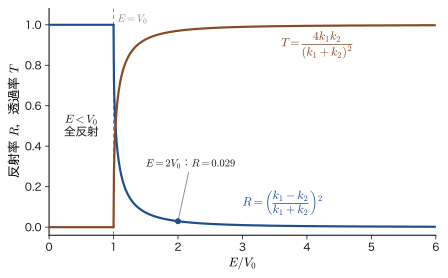
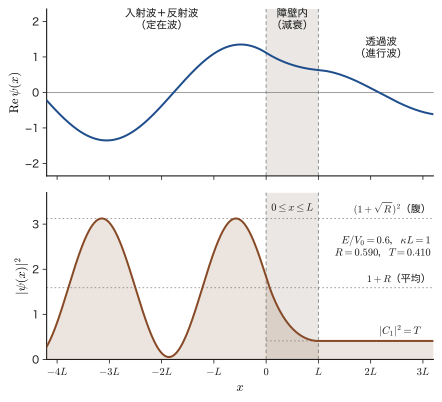
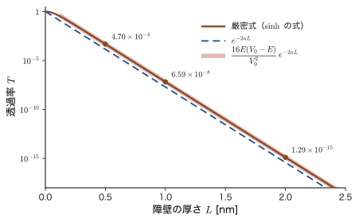
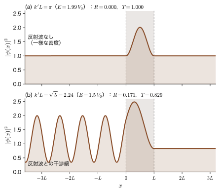
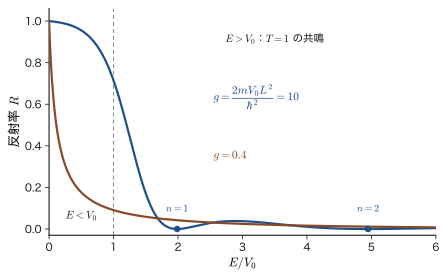
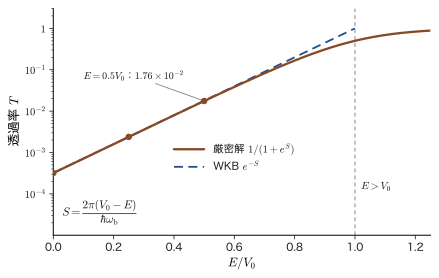
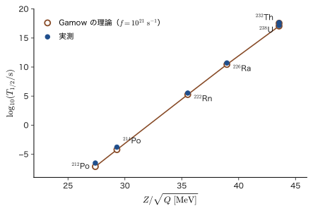
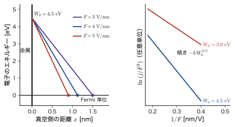

第12章トンネル効果 — 階段・障壁ポテンシャル
ボールを坂道に向かって転がしてみよう．勢いが足りなければ，ボールは坂の途中で止まって戻ってくる．高校物理の力学的エネルギー保存則から，運動エネルギーがポテンシャルエネルギーの増加分に足りなければ坂を越えられないことは，疑いようのない事実である．ところが電子のようなミクロの粒子は，「勢いが足りない」はずの壁の向こう側に，ときどき現れる．これがトンネル効果（tunnel effect）である．たとえば，エネルギー $7\ \mathrm{eV}$ の電子が高さ $10\ \mathrm{eV}$，厚さ $0.5\ \mathrm{nm}$ の壁にぶつかると，約 $5\times10^{-4}$ の確率で壁の反対側に抜ける．壁の厚さを $2\ \mathrm{nm}$ にすると，確率は $10^{-15}$ まで下がる（12.3 節）．「確率は小さいが $0$ ではなく，しかも壁の厚さにとても敏感」という 2 つの性質が，トンネル効果のほとんどすべてである．
この性質のおかげで，走査トンネル顕微鏡は原子 1 個の凹凸を見分け，フラッシュメモリは電源を切っても情報を保ち，太陽の中心では水素の核融合が起こり，ウラン $238$ の原子核の半分が $\alpha$ 線を出して別の原子核に変わるには，45 億年もかかる．
トンネル効果を理解する鍵は，粒子を「波」として扱うことである．前章の有限井戸では，井戸の外の壁の中に波動関数が $e^{-\kappa x}$ のように減衰しながら「しみ出す」ことを見た．壁が薄ければ，しみ出した波が壁の反対側まで届き，そこでふたたび進行する波になる．これが通り抜けである．計算のしかたは前章までと同じで，領域ごとに Schrödinger（シュレーディンガー）方程式を解き，領域の境目で波動関数と傾きを連続的につなぐだけである．ただし，今回求めたいものは束縛状態のエネルギーではなく，粒子の波が壁にぶつかったときに反射される割合 $R$ と透過する割合 $T$ である．エネルギー $E$ は好きな値をとれて，決まるのは係数の比である．この種の問題を散乱問題という．波の反射と透過は，弦の波（AD 03「大学基礎物理学」第14章 14.2）や光の全反射とエバネッセント波（14.7）でおなじみの現象であり，量子力学では粒子がそれと同じ振る舞いをする，というだけのことである．
この章では，まず最も単純な階段ポテンシャルで反射と透過の考え方（確率の流れ）を整理し（12.2 節），次に幅 $L$，高さ $V_0$ の障壁を解いて透過率の厳密な式を導く（12.3 節）．続けてエネルギーが障壁より高いのに反射が起こる理由と，反射が消える共鳴の条件を調べる（12.4 節）．厚い障壁では透過率が $e^{-2\kappa L}$ に近づくことから，一般の形のポテンシャルに拡張した Gamow（ガモフ）因子と WKB 近似の入口に進み（12.5 節），$\alpha$ 崩壊の半減期が何桁も変わる理由を数値で確かめる（12.6 節）．最後に，走査トンネル顕微鏡・トンネルダイオード・フラッシュメモリなど，材料とデバイスの中のトンネル効果を見積もる（12.7 節）．
- 階段・障壁ポテンシャルで，領域ごとに Schrödinger 方程式を解き，境界条件（$\psi$ と $\psi'$ の連続）から係数の連立方程式を立てて，反射率 $R$ と透過率 $T$ を求められること
- 確率の流れ $J$ から反射率・透過率を定義し，$R+T=1$ を確かめられること．振幅の 2 乗の比が透過率にならない場合（速さが違う場合）を説明できること
- $E\lt V_0$ の障壁の透過率 $T=\left[1+\dfrac{V_0^2\sinh^2\kappa L}{4E(V_0-E)}\right]^{-1}$ を，2 通りの解き方で導き，厚さ・質量・エネルギーへの指数関数的な依存を数値で見積もれること
- $E\gt V_0$ でも量子力学では反射が起こること，$k'L=n\pi$ のとき反射が消える（共鳴）ことを，波の干渉として説明できること
- 厚い障壁の近似 $T\approx e^{-2\kappa L}$ と，一般のポテンシャルに対する $T\approx\exp\!\left[-2\int\kappa\,\dd x\right]$（Gamow 因子）を導き，WKB 近似の適用条件を言えること
- $\alpha$ 崩壊・STM・電界放出・酸化膜の漏れ電流を，トンネル確率で数値的に見積もれること
もとにしたノート：望月泰英『物理学ノート 量子力学2』 pp. 22–24，およびトンネル効果に関する補遺の紙面（5 枚）．
12.1 古典と量子 — しみ出しからトンネルへ
12.1.1 古典力学の答え — 運動エネルギーは負にならない
粒子が 1 次元の $x$ 軸上を，ポテンシャルエネルギー $V(x)$ の中で動くとする．摩擦がなければ，全エネルギー（力学的エネルギー）$E$ は一定で，
\begin{equation} E=\frac{p^2}{2m}+V(x) \qquad\text{すなわち}\qquad \frac{p^2}{2m}=E-V(x) \label{eq:12-energy} \end{equation}である（$m$ は粒子の質量，$p$ は運動量）．運動エネルギー $p^2/2m$ は，実数の運動量 $p$ の 2 乗だから $0$ 以上でなければならない．したがって古典力学の粒子が存在できるのは，$V(x)\le E$ を満たす場所だけである．$V(x)\gt E$ の場所では式 \eqref{eq:12-energy} の右辺が負になり，運動エネルギーが負という不可能な事態になるので，粒子は決してそこに入れない．$V(x)=E$ となる点を転回点（turning point）という．丘に向かって転がるボールは，転回点で速さが $0$ になり，そこから引き返す．
たとえば，原点に置かれた点電荷（電荷 $+Q$ の粒子に引力を及ぼす負の電荷）が，図12.1 のような谷型のポテンシャル $V(x)$ をつくっているとしよう．実際の Coulomb ポテンシャルは原点で発散して底がないが，ここでは底の丸い谷で表す．全エネルギー $E$ が谷の底のすぐ上にある粒子が動けるのは，$V(x)\le E$ を満たす狭い範囲 $\abs{x}\le x_{\mathrm t}$ だけである（$x=\pm x_{\mathrm t}$ が転回点）．その外側へ出ようとすると $V(x)\gt E$ の領域に入ってしまい，運動エネルギーが負になるからである．これが古典力学の答えであり，図12.1 (a) の「この範囲から外へは出られない」に当たる．
12.1.2 量子力学の答え — 壁の中にも波動関数がある
ところが量子力学では，全エネルギー $E$ がポテンシャルエネルギー $V$ より低い（つまり，運動エネルギーが負になるはずの）場所にも，粒子が見いだされる．これが図12.1 (b) である．不思議な現象に思えるが，Schrödinger 方程式を書いてみると，実は当たり前の帰結だとわかる．時間を含まない Schrödinger 方程式（第9章 9.2）
\begin{equation} -\frac{\hbar^2}{2m}\frac{\dd^2\psi}{\dd x^2}+V\psi=E\psi \qquad\Longleftrightarrow\qquad \frac{\dd^2\psi}{\dd x^2}=-\frac{2m}{\hbar^2}\bigl(E-V\bigr)\psi \label{eq:12-tise} \end{equation}を，ポテンシャルが一定値 $V$ の領域で見よう．右辺の係数 $E-V$ の符号で，解の形がまったく変わる．
- $E\gt V$（古典的に許される領域）：$k=\sqrt{2m(E-V)}/\hbar$ とおくと $\psi''=-k^2\psi$．解は $e^{\pm ikx}$（振動する波）．波数 $k$ が運動量 $\hbar k$ に対応する．
- $E\lt V$（古典的に禁じられた領域）：$\kappa=\sqrt{2m(V-E)}/\hbar$ とおくと $\psi''=+\kappa^2\psi$．解は $e^{\pm\kappa x}$（指数関数的に増減する）．$\kappa$ を減衰定数とよぶ．
禁じられた領域でも，方程式は $\psi\equiv0$ を強制しない．有限の高さの壁の中では，$\psi$ は $e^{-\kappa x}$ のように急速に小さくなるが，$0$ にはならない．Born（ボルン）の確率解釈により，$\abs{\psi}^2\dd x$ は粒子を見いだす確率だから，壁の中にも粒子が見いだされる確率がある．これは前章の有限井戸で見たしみ出し（第11章 11.1）と同じ現象である．壁が無限に高い（$V_0\to\infty$，$\kappa\to\infty$）ときだけ，しみ出しの深さ $1/\kappa$ が $0$ になり，第10章の $\psi=0$ になる．
壁が十分に薄ければ，どうなるだろうか．しみ出した波が壁を抜けきったところで，そこは $V=0$ の自由な領域だから，$\psi$ はふたたび $e^{ikx}$ という進行波になる．壁の向こう側には，小さいが確かに，右へ進む波が残る．粒子が壁にトンネルを掘って通り抜けたように見えるので，これをトンネル効果という．つまりトンネル効果は，しみ出しが壁を貫くほど薄いときに起こる，しみ出し効果の延長線上の現象であり，本質的には同じものである．
調べる状況を決めよう．図12.2 のように，粒子が左から $x$ 軸の正の向きに進み，$0\le x\le L$ にある高さ $V_0$ の壁（ポテンシャル障壁，potential barrier）にぶつかる．ポテンシャルは
\begin{equation} V(x)=\begin{cases}0 & (x\lt0,\ \ L\lt x)\\[1mm] V_0 & (0\le x\le L)\end{cases} \label{eq:12-V} \end{equation}で，粒子のエネルギーは $E\lt V_0$ である（12.4 節では $E\gt V_0$ も扱う）．古典力学の答えは「$x=0$ で完全に跳ね返される」である．量子力学の答えを，波の言葉で先に眺めておこう．
左側には，障壁へ向かう入射波と，障壁から戻る反射波が重なっている．障壁の中では波は減衰する．そして右側には，小さな振幅の透過波が続く．透過波の振幅が小さいのは，障壁の中で減衰したからである．次節以降で，この絵を式にして，入射・反射・透過の割合を計算する．
12.1.3 エネルギー保存則との折り合い
問い：運動エネルギーが負の場所に粒子がいるのは，エネルギー保存則に反しないのか
式 \eqref{eq:12-energy} によれば，$V\gt E$ の場所では運動エネルギーが負になる．それなのに，そこに粒子が見いだされる確率が $0$ でないのは，矛盾ではないのだろうか．
答えは，「壁の中に粒子がいるかどうかを調べる」という操作にある．障壁の中に粒子を見つけるには，位置を障壁の中に収まる精度で測らなければならない．確率密度 $\abs{\psi}^2\propto e^{-2\kappa x}$ の減衰する長さは $1/(2\kappa)$ だから，位置の精度を $\Delta x\approx1/(2\kappa)$ とおく．不確定性原理（第8章 8.6，測定の擾乱は8.7）$\Delta x\,\Delta p\ge\hbar/2$ から，この測定は運動量に少なくとも
$$ \Delta p\gtrsim\frac{\hbar}{2\Delta x}=\hbar\kappa $$の乱れを与え，運動エネルギーは $\dfrac{(\Delta p)^2}{2m}\gtrsim\dfrac{\hbar^2\kappa^2}{2m}=V_0-E$（$\hbar^2\kappa^2/2m=V_0-E$ を使った）だけ乱される．つまり，壁の内部での位置の測定は，粒子に少なくとも $V_0-E$ のエネルギーを与えてしまい，壁の中の負の運動エネルギー $-(V_0-E)$ をちょうど打ち消す．測定して壁の中に「見つけた」粒子は，もはや測定前の粒子とは別の状態にある．エネルギー保存則は，測定装置まで含めた全体でちゃんと成り立っている．壁の中で運動エネルギーが負のまま動いている粒子を観測することは，決してできない．壁の中の減衰する波は，粒子が壁の中を「走っている」ことを意味するのではなく，壁の反対側で粒子を見いだす確率を決める波の一部として存在している，と考えるのがよい．
$$ \Delta p\gtrsim\frac{\hbar}{2\Delta x}=\frac{\hbar\kappa}{2} $$の乱れを与え，運動エネルギーは $\dfrac{(\Delta p)^2}{2m}\gtrsim\dfrac{\hbar^2\kappa^2}{8m}=\dfrac{V_0-E}{4}$ 程度（$\hbar^2\kappa^2/2m=V_0-E$ を使った）だけ乱される．つまり，壁の内部での位置の測定は，粒子に $V_0-E$ と同程度のエネルギーを与えてしまう．測定して壁の中に「見つけた」粒子は，もはや測定前の粒子とは別の状態にある．エネルギー保存則は，測定装置まで含めた全体でちゃんと成り立っている．壁の中で運動エネルギーが負のまま動いている粒子を観測することは，決してできない．壁の中の減衰する波は，粒子が壁の中を「走っている」ことを意味するのではなく，壁の反対側で粒子を見いだす確率を決める波の一部として存在している，と考えるのがよい．
光でも同じことが起こる — 全反射とエバネッセント波
ガラスの内部から空気との境界へ，全反射の臨界角を超える角度で光を入射させると，光は全反射する．しかし，空気の側には光の電場が指数関数的に減衰する波（エバネッセント波）がしみ出している（AD 03「大学基礎物理学」第14章 14.7）．もう 1 枚のガラスを，空気の隙間を波長程度以下にして近づけると，しみ出した波が反対側のガラスに届き，全反射していたはずの光の一部が隙間を通り抜けて進む．これはフラストレート全反射とよばれ，透過する光の強さは隙間の幅とともに指数関数的に減る．粒子の波動関数が障壁の中で減衰し，障壁を抜けて残る現象は，これとまったく同じ数学（減衰する波を含む波動方程式）で書ける．トンネル効果は「粒子だから不思議」なのではなく，「波だから起こる」現象である．
12.1.4 トンネル効果が現れる場面 — 実験事実と歴史
細かい計算に入る前に，トンネル効果が実際に働いている場面を，先に眺めておこう．どれも後の節で数値まで計算する．
応用：トンネル効果が主役になる現象
- $\alpha$ 崩壊（12.6 節）：原子核の中の $\alpha$ 粒子は，核力の井戸に閉じ込められているが，井戸の外の Coulomb 障壁をトンネルで通り抜けて飛び出す．ウラン $238$ の半減期は約 $4.5\times10^{9}$ 年，ポロニウム $212$ の半減期は約 $3\times10^{-7}$ 秒と，約 24 桁も違う．障壁の透過確率の違いで説明できる．
- 太陽の核融合（12.6 節）：太陽の中心の陽子は，熱運動のエネルギー（約 $1\ \mathrm{keV}$）よりはるかに高い Coulomb 障壁（約 $1\ \mathrm{MeV}$）を，トンネルで通り抜けて融合する．トンネル効果がなければ，太陽は輝かない．
- 走査トンネル顕微鏡（STM）（12.7 節）：金属の探針と試料の間の真空の隙間を電子がトンネルして流れる電流が，隙間の幅に指数関数的に依存することを使って，原子の凹凸を測る．
- トンネルダイオード，フラッシュメモリ，電界放出（12.7 節）：半導体の禁制帯や酸化膜を電子がトンネルする．
- 分子の中の運動：アンモニア分子 $\mathrm{NH_3}$ の窒素原子は，3 個の水素原子がつくる面の上側と下側の 2 つの安定な位置のあいだを，障壁をトンネルして行き来する（反転の振動数は約 $2.4\times10^{10}\ \mathrm{Hz}$）．化学反応での水素原子の移動（12.7 節）にも，トンネル効果が関わる．
歴史を簡単にたどっておく．トンネル効果は，量子力学ができた直後の 1920 年代後半に，いくつかの場所で同時に見いだされた．固体でトンネル効果を利用した装置は 20 世紀後半に実現した．年代順に，表12.1 にまとめる．
| 年 | 人物 | 内容 |
|---|---|---|
| 1927 | Hund（フント） | 分子のスペクトルを調べる中で，2 つの谷をもつポテンシャルの一方の谷から他方の谷へ粒子が移りうることに気づいた |
| 1928 | Gamow（ガモフ） | $\alpha$ 崩壊を，$\alpha$ 粒子が原子核の Coulomb 障壁をトンネルする現象として説明した．Gurney（ガーニー）と Condon（コンドン）も同じ年に独立に同じ説明を発表した |
| 1928 | Fowler（ファウラー），Nordheim（ノルドハイム） | 金属に強い電場をかけると電子が飛び出す電界放出を，三角形の障壁の透過として説明した（12.7 節） |
| 1957 年ごろ | 江崎玲於奈 | 高濃度にドープした半導体の接合でトンネル電流を見いだした（トンネルダイオード）．Giaever（ジェーバー），Josephson（ジョセフソン）とともに 1973 年のノーベル物理学賞を受けた |
| 1981 | Binnig（ビーニッヒ），Rohrer（ローラー） | 走査トンネル顕微鏡を開発した．電子顕微鏡の Ruska（ルスカ）とともに 1986 年のノーベル物理学賞を受けた |
例題12.1 侵入長 — 電子と陽子と野球ボール
障壁の中で波動関数は $e^{-\kappa x}$ のように減衰する．振幅が $1/e$（約 $0.37$）になる距離 $1/\kappa$ を侵入長とよぶことにする（確率密度 $\abs{\psi}^2\propto e^{-2\kappa x}$ が $1/e$ になる距離は $1/(2\kappa)$ である）．障壁の高さがエネルギーより $V_0-E=1\ \mathrm{eV}$ だけ高いとき，(1) 電子，(2) 陽子の侵入長を求めよ．(3) 質量 $0.145\ \mathrm{kg}$ の野球ボールが，エネルギーより $1\ \mathrm{J}$ だけ高い壁にぶつかるときの侵入長はどれほどか．
解答 $\kappa=\dfrac{\sqrt{2m(V_0-E)}}{\hbar}$ で，侵入長は $1/\kappa=\hbar/\sqrt{2m(V_0-E)}$ である．$1\ \mathrm{eV}=1.602\,177\times10^{-19}\ \mathrm{J}$，$\hbar=1.054\,572\times10^{-34}\ \mathrm{J\,s}$ を使う．
(1) 電子（$m_{\mathrm e}=9.109\,384\times10^{-31}\ \mathrm{kg}$）：$2m_{\mathrm e}(V_0-E)=2\times9.109\,384\times10^{-31}\times1.602\,177\times10^{-19}=2.9190\times10^{-49}\ \mathrm{kg\,J}$．平方根は $5.4028\times10^{-25}\ \mathrm{kg\,m/s}$ だから
$$ \kappa=\frac{5.4028\times10^{-25}}{1.054\,572\times10^{-34}}=5.123\times10^{9}\ \mathrm{m^{-1}},\qquad \frac{1}{\kappa}=1.952\times10^{-10}\ \mathrm{m}=0.195\ \mathrm{nm} $$である．これは原子の大きさ（$0.1\ \mathrm{nm}$ 程度）と同じくらいの長さである．
(2) 陽子（$m_{\mathrm p}=1.672\,622\times10^{-27}\ \mathrm{kg}$）：質量は電子の約 $1836$ 倍だから，$\kappa$ は $\sqrt{1836}=42.85$ 倍になる．$2m_{\mathrm p}(V_0-E)=5.3597\times10^{-46}$，平方根は $2.3151\times10^{-23}$ で，$\kappa=2.195\times10^{11}\ \mathrm{m^{-1}}$，
$$ \frac{1}{\kappa}=4.56\times10^{-12}\ \mathrm{m}=4.56\ \mathrm{pm} $$である．陽子は電子より 40 倍以上，壁にしみ出しにくい．
(3) 野球ボール：$2m(V_0-E)=2\times0.145\times1=0.29\ \mathrm{kg\,J}$，平方根は $0.5385\ \mathrm{kg\,m/s}$ だから $1/\kappa=1.054\,572\times10^{-34}/0.5385=1.96\times10^{-34}\ \mathrm{m}$ である．これは原子核の大きさ（$10^{-15}\ \mathrm{m}$）よりもはるかに小さく，トンネル効果は日常の世界では現れない．質量が大きく，エネルギーの差が大きいほど侵入長は短く，量子力学の結果は古典力学の結果に近づく．
12.2 階段ポテンシャル — 反射と透過の基本
障壁の問題（12.3 節）は，領域が 3 つあって少し込み入っている．そこで，まず境目が 1 つだけの最も単純なポテンシャル，階段ポテンシャル（potential step）で，波の反射と透過をどう数えるかを整理しよう．ここで得る道具（境界条件の立て方，確率の流れによる反射率と透過率の定義）は，障壁でもそのまま使う．
12.2.1 階段ポテンシャルと $E\gt V_0$ の解
ポテンシャルを
\begin{equation} V(x)=\begin{cases}0 & (x\lt0)\\ V_0 & (x\gt0)\end{cases} \label{eq:12-step} \end{equation}とし，左（$x\lt0$）から粒子が入射する．まず粒子のエネルギーが階段より高い場合（$E\gt V_0$．$V_0$ は正でも負でもよく，$V_0\gt0$ は上り階段，$V_0\lt0$ は下り階段である）を考える．古典力学では，粒子は $x=0$ で減速（$V_0\lt0$ なら加速）するだけで，必ず $x\gt0$ に進む．量子力学ではどうなるだろうか．
各領域で式 \eqref{eq:12-tise} を解く．$x\lt0$ では $V=0$ だから，$k_1=\sqrt{2mE}/\hbar$ とおいて $\psi''=-k_1^2\psi$．$x\gt0$ では $V=V_0$ だから，$k_2=\sqrt{2m(E-V_0)}/\hbar$ とおいて $\psi''=-k_2^2\psi$ である．波数 $k_1$ は，次節の障壁の $k_0=\sqrt{2mE}/\hbar$ と同じ量である．時間依存性を含めると $\Psi(x,t)=\psi(x)\,e^{-iEt/\hbar}$ なので，$e^{ikx}\,e^{-iEt/\hbar}=e^{i(kx-\omega t)}$（$\omega=E/\hbar$）は右向きに進む波，$e^{-ikx}\,e^{-iEt/\hbar}$ は左向きに進む波である．したがって，
\begin{equation} \psi(x)=\begin{cases}A\,e^{ik_1x}+B\,e^{-ik_1x} & (x\lt0)\\[1mm] C\,e^{ik_2x} & (x\gt0)\end{cases} \label{eq:12-step-psi} \end{equation}と書ける．$A$ は入射波（右向き），$B$ は反射波（左向き）の振幅である．$x\gt0$ には，右向きの透過波 $C$ だけを置く．左向きの波 $e^{-ik_2x}$ は，右の無限遠から粒子が入射してくることを意味するが，そのような状況は考えていないからである．
次に，$x=0$ での境界条件を課す．$V$ が有限の高さの階段なので，$\psi$ と $\psi'$ は境目で連続でなければならない（第9章 9.6.3 節の定理9.3(i)．11.2 節の定理11.2 と同じ結論である．式 \eqref{eq:12-tise} を $x=-\varepsilon$ から $x=+\varepsilon$ まで積分して $\varepsilon\to0$ とすると，右辺が $0$ に近づく，というのが導出の要点である）．
導出：階段ポテンシャルの振幅比（$E\gt V_0$）
$x=0$ で $\psi$ が連続：$\psi(-0)=\psi(+0)$ より，
$$ A+B=C \qquad\text{(a)} $$$\psi'$ が連続：$\psi'(-0)=\psi'(+0)$．式 \eqref{eq:12-step-psi} を微分すると，$x\lt0$ で $\psi'=ik_1(Ae^{ik_1x}-Be^{-ik_1x})$，$x\gt0$ で $\psi'=ik_2Ce^{ik_2x}$ だから，
$$ ik_1(A-B)=ik_2C\quad\Longrightarrow\quad A-B=\frac{k_2}{k_1}C \qquad\text{(b)} $$(a) と (b) を足すと $2A=\left(1+\dfrac{k_2}{k_1}\right)C=\dfrac{k_1+k_2}{k_1}C$，したがって $\dfrac{C}{A}=\dfrac{2k_1}{k_1+k_2}$．(a) から (b) を引くと $2B=\left(1-\dfrac{k_2}{k_1}\right)C=\dfrac{k_1-k_2}{k_1}\cdot\dfrac{2k_1}{k_1+k_2}A$，したがって $\dfrac{B}{A}=\dfrac{k_1-k_2}{k_1+k_2}$．
$$ \frac{B}{A}=\frac{k_1-k_2}{k_1+k_2},\qquad \frac{C}{A}=\frac{2k_1}{k_1+k_2}\qquad(E\gt V_0) \qquad\text{(c)} $$（(a) から $B/A=C/A-1=(2k_1-k_1-k_2)/(k_1+k_2)$ としても同じである．）
（導出終わり）
比 $B/A$，$C/A$ は実数である．上り階段（$V_0\gt0$）では $k_2\lt k_1$ だから $B/A\gt0$（反射波は入射波と同じ符号，位相のずれなし），$C/A\gt1$ である．（下り階段 $V_0\lt0$ では $k_2\gt k_1$ で，$B/A\lt0$（反射波の位相が $\pi$ ずれる），$C/A\lt1$ となる．）とくに $V_0\gt0$ のとき，$\abs{C/A}^2=4k_1^2/(k_1+k_2)^2$ はつねに $1$ を超える．透過の「確率」が $1$ を超えるはずはないから，$\abs{C/A}^2$ を透過率と呼ぶことはできない．次項で，透過率を正しく定義する．
12.2.2 反射率と透過率 — 確率の流れで数える
「入射した粒子のうち，何割が反射され，何割が透過するか」は，単位時間に通過する粒子の数で数えなければならない．波動関数の 2 乗 $\abs{\psi}^2$ は確率密度（単位長さあたりの存在確率）であり，領域ごとに粒子の速さが違えば，同じ密度でも単位時間に通る粒子の数は違うからである．単位時間に，ある点を右向きに通過する確率が確率の流れ（probability current）$J$ である（第9章 9.3）．1 次元では
\begin{equation} J=\frac{\hbar}{2mi}\left(\psi^*\frac{\dd\psi}{\dd x}-\psi\frac{\dd\psi^*}{\dd x}\right)=\frac{\hbar}{m}\,\mathrm{Im}\!\left(\psi^*\frac{\dd\psi}{\dd x}\right) \label{eq:12-J} \end{equation}で与えられる．たとえば平面波 $\psi=Ce^{ikx}$ では，$\psi^*\psi'=ik\abs{C}^2$ なので $J=\dfrac{\hbar k}{m}\abs{C}^2=v\,\abs{C}^2$ である．「速さ $v=\hbar k/m$ × 確率密度 $\abs{C}^2$」という自然な結果で，流れは確率密度と速さの積になっている．
式 \eqref{eq:12-step-psi} の $x\lt0$ の波動関数では，入射波と反射波が重なっているので，そのまま \eqref{eq:12-J} に代入する．$\psi^*\psi'$ は
$$ \psi^*\psi'=\bigl(A^*e^{-ik_1x}+B^*e^{ik_1x}\bigr)\,ik_1\bigl(Ae^{ik_1x}-Be^{-ik_1x}\bigr)=ik_1\Bigl[\abs{A}^2-\abs{B}^2+\bigl(B^*Ae^{2ik_1x}-A^*Be^{-2ik_1x}\bigr)\Bigr] $$となる．最後の括弧は $z-z^*$（$z=B^*Ae^{2ik_1x}$）の形で純虚数だから，$ik_1$ 倍すると実数になり，虚部には寄与しない．したがって
\begin{equation} J=\frac{\hbar k_1}{m}\bigl(\abs{A}^2-\abs{B}^2\bigr)\quad(x\lt0),\qquad J=\frac{\hbar k_2}{m}\abs{C}^2\quad(x\gt0) \label{eq:12-J-step} \end{equation}を得る．$x\lt0$ の流れは，右向きの入射の流れ $\dfrac{\hbar k_1}{m}\abs{A}^2$ から，左向きの反射の流れ $\dfrac{\hbar k_1}{m}\abs{B}^2$ を引いたものである（干渉項は流れに寄与しない）．
定義12.1 反射率と透過率
入射波の確率の流れ $J_{\mathrm{in}}$，反射波の流れの大きさ $J_{\mathrm{R}}$，透過波の流れ $J_{\mathrm{T}}$ に対して，
$$ R\equiv\frac{J_{\mathrm{R}}}{J_{\mathrm{in}}},\qquad T\equiv\frac{J_{\mathrm{T}}}{J_{\mathrm{in}}} $$を，それぞれ反射率（reflectance，reflection coefficient），透過率（transmittance，transmission coefficient）という．入射した確率のうち，反射される割合，透過する割合を表す．
階段ポテンシャルでは，$J_{\mathrm{in}}=\dfrac{\hbar k_1}{m}\abs{A}^2$，$J_{\mathrm{R}}=\dfrac{\hbar k_1}{m}\abs{B}^2$，$J_{\mathrm{T}}=\dfrac{\hbar k_2}{m}\abs{C}^2$ だから，
$$ R=\abs{\frac{B}{A}}^2,\qquad T=\frac{k_2}{k_1}\abs{\frac{C}{A}}^2 $$である．透過率には，波数の比 $k_2/k_1$（速さの比）がかかる．前項の結果 (c) を代入しよう．
定理12.1 階段ポテンシャルの反射率と透過率（$E\gt V_0$）
$k_1=\sqrt{2mE}/\hbar$，$k_2=\sqrt{2m(E-V_0)}/\hbar$ に対して，
\begin{equation} R=\left(\frac{k_1-k_2}{k_1+k_2}\right)^2,\qquad T=\frac{4k_1k_2}{(k_1+k_2)^2},\qquad R+T=1 \label{eq:12-step-RT} \end{equation}証明
$R=\abs{B/A}^2=\dfrac{(k_1-k_2)^2}{(k_1+k_2)^2}$．$T=\dfrac{k_2}{k_1}\abs{\dfrac{C}{A}}^2=\dfrac{k_2}{k_1}\cdot\dfrac{4k_1^2}{(k_1+k_2)^2}=\dfrac{4k_1k_2}{(k_1+k_2)^2}$．和は
$$ R+T=\frac{(k_1-k_2)^2+4k_1k_2}{(k_1+k_2)^2}=\frac{k_1^2-2k_1k_2+k_2^2+4k_1k_2}{(k_1+k_2)^2}=\frac{(k_1+k_2)^2}{(k_1+k_2)^2}=1 $$となる．$R+T=1$ は，確率の流れの連続性 $k_1(\abs{A}^2-\abs{B}^2)=k_2\abs{C}^2$ の言い換えである．実際，$\abs{A}^2-\abs{B}^2=\abs{A}^2\left[1-\dfrac{(k_1-k_2)^2}{(k_1+k_2)^2}\right]=\dfrac{4k_1k_2}{(k_1+k_2)^2}\abs{A}^2$ と $k_2\abs{C}^2=\dfrac{4k_1^2k_2}{(k_1+k_2)^2}\abs{A}^2$ は，$k_1$ 倍すると一致する．
（証明終わり）
結果を眺めよう．
- $E\gg V_0$ のとき，$k_2\to k_1$ で $R\to0$，$T\to1$．階段が粒子のエネルギーに比べて小さいと，反射はほとんど起こらない．
- $E\to V_0$（から上）のとき，$k_2\to0$ で $R\to1$，$T\to0$．$x\gt0$ での粒子の速さが $0$ に近づくと，透過はほとんど起こらない．
- $E\gt V_0$ でも，$R\ne0$ である．古典力学では，$E\gt V_0$ の粒子は必ず階段を越える（$T=1$）．量子力学で反射が起こるのは，波の性質による．屈折率が違う境目での光の反射（垂直入射で $R=\left(\dfrac{n_1-n_2}{n_1+n_2}\right)^2$），弦の線密度が違う境目での反射（AD 03「大学基礎物理学」14.2，14.3）と，まったく同じ形の式である．波数 $k$ が，屈折率 $n$ の役割をしている．
例題12.2 電子が結晶の表面に入るとき（階段ポテンシャルの $E\gt V_0$）
電子線回折（LEED）などでは，エネルギー $E=54\ \mathrm{eV}$ の電子を結晶の表面に当てる．結晶の内部のポテンシャルエネルギーは，真空中より約 $10\ \mathrm{eV}$ 低い（内部ポテンシャル）ので，表面を階段ポテンシャル $V(x)=0$（$x\lt0$，真空），$V_0=-10\ \mathrm{eV}$（$x\gt0$，結晶）で近似する（$V_0\lt0$ の下り階段の例である）．(1) 表面で反射される割合 $R$ を求めよ．(2) 別の例として，$E=5\ \mathrm{eV}$ の電子が $V_0=3\ \mathrm{eV}$ の階段に入射するとき，$R$，$T$ と $\abs{C/A}^2$ を求めよ．
解答 反射率は波数の比 $\rho\equiv k_2/k_1=\sqrt{(E-V_0)/E}$ だけで決まる：$R=\left(\dfrac{1-\rho}{1+\rho}\right)^2$，$T=\dfrac{4\rho}{(1+\rho)^2}$（式 \eqref{eq:12-step-RT} を $k_1$ で割った形）．
(1) $E-V_0=54-(-10)=64\ \mathrm{eV}$ だから $\rho=\sqrt{64/54}=1.0887$．
$$ R=\left(\frac{1-1.0887}{1+1.0887}\right)^2=\left(\frac{-0.0887}{2.0887}\right)^2=(-0.04245)^2=1.8\times10^{-3} $$である．反射はわずか約 $0.2\%$ で，$T=0.998$ となる．結晶の中の波長は，真空中の波長 $2\pi/k_1=0.167\ \mathrm{nm}$ から $2\pi/k_2=0.153\ \mathrm{nm}$ へ，約 $8\%$ 短くなる（$k_2=1.0887\,k_1$）．入射エネルギーが内部ポテンシャルよりずっと高いので，表面での反射は小さい．
(2) $E-V_0=2\ \mathrm{eV}$ だから $\rho=\sqrt{2/5}=0.6325$．
$$ R=\left(\frac{1-0.6325}{1+0.6325}\right)^2=(0.2252)^2=0.0507,\qquad T=\frac{4\times0.6325}{(1.6325)^2}=\frac{2.5298}{2.6649}=0.9493 $$で，$R+T=1.0000$ である．一方 $\abs{C/A}^2=\dfrac{4}{(1+\rho)^2}=\dfrac{4}{2.6649}=1.501$ は $1$ を超える．透過側の確率密度 $\abs{C}^2$ が入射側 $\abs{A}^2$ の 1.5 倍になるが，粒子の速さが $\rho=0.63$ 倍に遅くなっているので，通過する流れは $\rho\abs{C/A}^2=0.949$ 倍（$=T$）にしかならない．混雑した道路で，車の密度は高いが，流れる台数はほとんど変わらないのと同じである．
12.2.3 $E\lt V_0$ の階段 — 全反射としみ出し
次に，粒子のエネルギーが階段より低い場合（$0\lt E\lt V_0$）を考える．$x\lt0$ の解は前と同じ $Ae^{ik_1x}+Be^{-ik_1x}$（$k_1=\sqrt{2mE}/\hbar$）．$x\gt0$ では，式 \eqref{eq:12-tise} が $\psi''=\kappa^2\psi$（$\kappa=\sqrt{2m(V_0-E)}/\hbar$）となり，一般解は $Ce^{-\kappa x}+De^{+\kappa x}$ である．$e^{+\kappa x}$ は $x\to\infty$ で発散し，確率密度が無限に大きくなってしまうので，物理的に許されない：$D=0$．よって
$$ \psi(x)=\begin{cases}A\,e^{ik_1x}+B\,e^{-ik_1x} & (x\lt0)\\ C\,e^{-\kappa x} & (x\gt0)\end{cases} $$である．$x=0$ の境界条件は，$\psi$ の連続から $A+B=C$，$\psi'$ の連続から $ik_1(A-B)=-\kappa C$，すなわち $A-B=\dfrac{-\kappa}{ik_1}C=\dfrac{i\kappa}{k_1}C$ である（$-1/i=i$ を使った）．前項と同様に足し引きして，
$$ 2A=\left(1+\frac{i\kappa}{k_1}\right)C\ \Rightarrow\ \frac{C}{A}=\frac{2k_1}{k_1+i\kappa},\qquad \frac{B}{A}=\frac{C}{A}-1=\frac{2k_1-k_1-i\kappa}{k_1+i\kappa}=\frac{k_1-i\kappa}{k_1+i\kappa} $$を得る．$E\gt V_0$ の結果 (c) で $k_2\to i\kappa$ とおいた形になっている．
定理12.2 階段ポテンシャルの全反射（$E\lt V_0$）
$E\lt V_0$ の階段では，$\abs{B/A}=1$，すなわち $R=1$，$T=0$ である．反射波は位相が $-2\arctan(\kappa/k_1)$ だけずれる：
\begin{equation} \frac{B}{A}=\frac{k_1-i\kappa}{k_1+i\kappa}=e^{-2i\delta},\qquad \delta=\arctan\frac{\kappa}{k_1},\qquad \abs{\frac{C}{A}}^2=\frac{4k_1^2}{k_1^2+\kappa^2}=\frac{4E}{V_0} \label{eq:12-step-low} \end{equation}透過側には $\abs{\psi}^2=\abs{C}^2e^{-2\kappa x}$ という，減衰するしみ出しの確率密度が残るが，流れは $0$ である．
証明
$k_1-i\kappa$ と $k_1+i\kappa$ は互いに複素共役で，絶対値が等しい（$\sqrt{k_1^2+\kappa^2}$）から $\abs{B/A}=1$，$R=\abs{B/A}^2=1$ である．$k_1+i\kappa=\sqrt{k_1^2+\kappa^2}\,e^{i\delta}$（$\tan\delta=\kappa/k_1$）と書けば，$k_1-i\kappa=\sqrt{k_1^2+\kappa^2}\,e^{-i\delta}$ で $B/A=e^{-2i\delta}$．また $\abs{C/A}^2=4k_1^2/(k_1^2+\kappa^2)$ で，$k_1^2+\kappa^2=2mV_0/\hbar^2$，$k_1^2=2mE/\hbar^2$ だから $=4E/V_0$．流れは，$\psi=Ce^{-\kappa x}$ の $\psi^*\psi'=-\kappa\abs{C}^2e^{-2\kappa x}$ が実数なので，式 \eqref{eq:12-J} の虚部が $0$：$J=0$ となる．よって $T=0$．
（証明終わり）
階段が非常に高い極限（$V_0\to\infty$，$\kappa\to\infty$）では，$\delta\to\pi/2$，$B/A\to-1$，$C\to0$ となり，壁で $\psi=0$ になる無限井戸（第10章）の壁での反射（位相が $\pi$ ずれる，固定端反射）に一致する．一方，$E\to V_0$（$\kappa\to0$）では $\delta\to0$，$B/A\to1$（自由端反射）になる．波が壁に浸透してから反射される，という描像は，光の全反射（AD 03 14.7）で，光が空気側に少ししみ出してから反射されるのと同じである．
例題12.3 $E\lt V_0$ の階段 — 全反射と侵入の深さ
電子が $E=2\ \mathrm{eV}$ で，高さ $V_0=4\ \mathrm{eV}$ の階段に左から入射する．(1) $k_1$，$\kappa$，$B/A$，$C/A$ を求めよ．(2) 反射での位相の跳びを求めよ．(3) 階段の位置での確率密度 $\abs{\psi(0)}^2$ は入射波の密度 $\abs{A}^2$ の何倍か．また，確率密度が壁の位置での値の $e^{-2}$ になる深さを求めよ．(4) 確率の流れを計算して，$R=1$，$T=0$ を確かめよ．
解答 (1) $E=2\ \mathrm{eV}$，$V_0-E=2\ \mathrm{eV}$ で，2 つの値が等しいから $k_1=\kappa=\sqrt{2m_{\mathrm e}\cdot2\ \mathrm{eV}}/\hbar=7.245\times10^{9}\ \mathrm{m^{-1}}$（例題12.1 の電子の $\kappa=5.123\times10^{9}\ \mathrm{m^{-1}}$ の $\sqrt{2}$ 倍）である．したがって
$$ \frac{B}{A}=\frac{k_1-i\kappa}{k_1+i\kappa}=\frac{1-i}{1+i}=\frac{(1-i)^2}{(1+i)(1-i)}=\frac{-2i}{2}=-i,\qquad \frac{C}{A}=\frac{2}{1+i}=1-i $$(2) $B/A=-i=e^{-i\pi/2}$ だから，位相の跳びは $-\pi/2$．これは $\delta=\arctan(\kappa/k_1)=\pi/4$ で $-2\delta=-\pi/2$ と一致する．
(3) $\abs{\psi(0)}^2=\abs{C}^2=\abs{1-i}^2\abs{A}^2=2\abs{A}^2$，すなわち $4E/V_0=2$ 倍である．しみ出しの確率密度 $\abs{C}^2e^{-2\kappa x}$ が $e^{-2}$ 倍になるのは $\kappa x=1$，すなわち $x=1/\kappa=\dfrac{1}{7.245\times10^{9}\ \mathrm{m^{-1}}}=1.38\times10^{-10}\ \mathrm{m}=0.138\ \mathrm{nm}$ のところである．
(4) $J_{\mathrm{in}}=\dfrac{\hbar k_1}{m}\abs{A}^2$，$J_{\mathrm{R}}=\dfrac{\hbar k_1}{m}\abs{B}^2=\dfrac{\hbar k_1}{m}\abs{-i}^2\abs{A}^2=J_{\mathrm{in}}$．$R=J_{\mathrm{R}}/J_{\mathrm{in}}=1$．透過側は $\psi=Ce^{-\kappa x}$，$\psi^*\psi'=-\kappa\abs{C}^2e^{-2\kappa x}$ が実数で，$J_{\mathrm{T}}=0$，$T=0$ である．入射した流れはすべて反射され，壁の位置には確率密度の「溜まり」が定在するだけで，流れ込みは $0$ である．
12.2.4 階段ポテンシャルの $R$，$T$ をエネルギーの関数として見る
図12.3 は，式 \eqref{eq:12-step-RT} と \eqref{eq:12-step-low} をまとめて，$E/V_0$ の関数として描いたものである．$E\lt V_0$ では全反射（$R=1$）だが，$E$ が $V_0$ を超えるとすぐに透過が始まり，$E=2V_0$ でも $R=0.029$ の反射が残る．古典力学では，$E\gt V_0$ で $T=1$ の階段関数になる．量子力学では，$E=V_0$ の付近で丸く鈍った曲線になる．

12.3 障壁の透過率 — エネルギーが障壁より低いとき
いよいよ本題である．式 \eqref{eq:12-V} の障壁（$0\le x\le L$ で $V=V_0$，それ以外で $V=0$）に，エネルギー $E\lt V_0$ の粒子が左から入射するとき，反対側に透過する割合を求める．手順は階段ポテンシャルと同じで，(1) 3 つの領域ごとに Schrödinger 方程式を解き，(2) 2 つの境目 $x=0$，$x=L$ で $\psi$ と $\psi'$ を連続的につなぎ，(3) 未知の係数の比を決める，の 3 段階である．
12.3.1 3 つの領域の波動関数
領域を左から順に I（$x\lt0$），II（$0\le x\le L$），III（$x\gt L$）とよび，それぞれの波動関数を $\psi_1$，$\psi_2$，$\psi_3$ と書く．本章では，次の 2 つの波数を使う．
\begin{equation} k_0=\frac{\sqrt{2mE}}{\hbar},\qquad \kappa=\frac{\sqrt{2m(V_0-E)}}{\hbar} \label{eq:12-k0-kappa} \end{equation}$k_0$ は $V=0$ の領域での（運動エネルギー $E$ に対応する）波数，$\kappa$ は障壁の中での減衰定数である．どちらも実数で正である（$0\lt E\lt V_0$ だから）．どちらも長さの逆数（$\mathrm{m^{-1}}$）の次元をもつ（$\sqrt{\mathrm{kg\cdot J}}/(\mathrm{J\,s})=\mathrm{m^{-1}}$）ので，$\kappa L$ は無次元である．
記号について：減衰定数は $\kappa$
他書では $b$ や $k_V$ などと書かれる障壁の中の減衰定数に当たる量を，本書では前章の有限井戸と同じく $\kappa$ に統一する．また，$V=0$ の領域の波数は $k_0$，次の 12.4 節で出てくる $E\gt V_0$ の障壁の中の波数は $k'$ と書く．なお，12.7.3 節の電界放出の式に出てくる $b$ は電界放出の定数で，減衰定数とは無関係である．また，この章の $k_0=\sqrt{2mE}/\hbar$ は波数で，次章（第13章）と第19章のばね定数 $k_0$ とは別の量である（ばねの話は第13章のなかで閉じているので，混同しないように）．
領域 I（$x\lt0$）： $V=0$ だから，式 \eqref{eq:12-tise} は $-\dfrac{\hbar^2}{2m}\dfrac{\dd^2\psi}{\dd x^2}=E\psi$，すなわち $\psi''=-k_0^2\psi$ となる．これは単振動の方程式で，解は 2 つの進行波 $e^{\pm ik_0x}$ の重ね合わせである：
\begin{equation} \psi_1(x)=A_1\,e^{ik_0x}+A_2\,e^{-ik_0x}\qquad(x\lt0) \label{eq:12-psi1} \end{equation}$A_1e^{ik_0x}$ は右向きに進む波で，障壁へ向かう入射波，$A_2e^{-ik_0x}$ は左向きに進む波で，障壁で跳ね返された反射波である．時間依存性 $e^{-iEt/\hbar}$ をかけると，前者は $e^{i(k_0x-\omega t)}$，後者は $e^{i(-k_0x-\omega t)}$ となり，進む向きがわかる（12.2 節）．
領域 II（$0\le x\le L$）： $V=V_0$ だから，$-\dfrac{\hbar^2}{2m}\psi''+V_0\psi=E\psi$，すなわち
$$ \frac{\dd^2\psi}{\dd x^2}-\frac{2m}{\hbar^2}(V_0-E)\,\psi=0 $$である．$V_0-E\gt0$ なので，この方程式は $\psi''=\kappa^2\psi$ で，解は指数関数：
\begin{equation} \psi_2(x)=B_1\,e^{\kappa x}+B_2\,e^{-\kappa x}\qquad(0\le x\le L) \label{eq:12-psi2} \end{equation}である．$e^{\kappa x}$ は右へ行くほど増え，$e^{-\kappa x}$ は減る．領域 II は有限の幅しかないので，$x\to\infty$ で発散する項を除く必要はなく，両方の項が必要である（12.3.5 節で，両方があってはじめて流れが生じることを見る）．
領域 III（$x\gt L$）： ふたたび $V=0$ なので，領域 I と同じ方程式になる：
\begin{equation} \psi_3(x)=C_1\,e^{ik_0x}+C_2\,e^{-ik_0x}\qquad(x\gt L) \label{eq:12-psi3} \end{equation}$C_1e^{ik_0x}$ は右向きの透過波，$C_2e^{-ik_0x}$ は左向きの波である．
12.3.2 境界条件 — 4 つの式
領域の境目 $x=0$ と $x=L$ では，ポテンシャルは有限の跳びしかない．12.2 節と同じく，Schrödinger 方程式を境目のまわりで積分すると，$\psi$ も $\psi'$ も境目で連続でなければならないことがわかる．すなわち境界条件は次の 4 つである（$\psi(-0)$，$\psi(+0)$ は，$x=0$ に左，右から近づけた極限値）：
$$ \begin{cases}\psi_1(0)=\psi_2(0)\\ \psi_2(L)=\psi_3(L)\end{cases}\qquad \begin{cases}\psi_1'(0)=\psi_2'(0)\\ \psi_2'(L)=\psi_3'(L)\end{cases} $$各領域の波動関数 \eqref{eq:12-psi1}〜\eqref{eq:12-psi3} と，その導関数（$\psi_1'=ik_0(A_1e^{ik_0x}-A_2e^{-ik_0x})$，$\psi_2'=\kappa(B_1e^{\kappa x}-B_2e^{-\kappa x})$，$\psi_3'=ik_0(C_1e^{ik_0x}-C_2e^{-ik_0x})$）を代入すると，
\begin{align} A_1+A_2&=B_1+B_2 \label{eq:12-bc1}\\ B_1e^{\kappa L}+B_2e^{-\kappa L}&=C_1e^{ik_0L}+C_2e^{-ik_0L} \label{eq:12-bc2}\\ ik_0(A_1-A_2)&=\kappa(B_1-B_2) \label{eq:12-bc3}\\ \kappa\left(B_1e^{\kappa L}-B_2e^{-\kappa L}\right)&=ik_0\left(C_1e^{ik_0L}-C_2e^{-ik_0L}\right) \label{eq:12-bc4} \end{align}となる．式 \eqref{eq:12-bc1}，\eqref{eq:12-bc3} は $x=0$ での，式 \eqref{eq:12-bc2}，\eqref{eq:12-bc4} は $x=L$ での条件である．式 \eqref{eq:12-bc3} の両辺を $ik_0$ で割り，$1/i=-i$ を使うと，$x=0$ での 2 つの条件は次の形にそろう：
\begin{equation} \begin{aligned} A_1+A_2&=B_1+B_2\\ A_1-A_2&=-i\,\frac{\kappa}{k_0}\,(B_1-B_2) \end{aligned} \label{eq:12-bc-left} \end{equation}未知数は $A_1,A_2,B_1,B_2,C_1,C_2$ の 6 個，式は 4 個である．解が一意に決まらないのは当然で，(i) 波動関数全体の定数倍の自由度（規格化していない）と，(ii) 右側にどんな波があるかという物理的な条件が，まだ決まっていないからである．次の項で (ii) を決める．
問い：この考え方は，古典的にも量子力学的にも適用できるのか
「領域ごとに波の方程式を解き，境目で波と傾きをつなぐ」というこの手順は，量子力学の粒子にだけ通用する考え方だろうか．それとも古典力学でも使えるだろうか．
整理するとこうなる．(a) 古典的な波（弦の波，音波，光などの電磁波）には，そのまま適用できる．実際，密度の違う弦のつなぎ目での反射と透過（AD 03「大学基礎物理学」14.2）は，まったく同じ手順で求める．全反射する光を薄い空気層で隔てたときの透過（フラストレート全反射，12.1 節）は，障壁の透過とまったく同じ式になる．(b) 量子力学の粒子にも，波動関数に対して適用できる．粒子が波として振る舞うので，波と同じ手順が使える．(c) 一方，古典力学の粒子（Newton の運動方程式に従う質点）には，波動関数がなく，この手順は意味をもたない．古典粒子は $E\lt V_0$ なら必ず壁で跳ね返り，透過しない．つまり，障壁の透過という現象は，「波の方程式を解き，境目でつなぐ」という手順そのものから出てくるのであって，量子力学の特殊な仮定が要るわけではない．量子力学が古典力学と違うのは，粒子の運動にその波の方程式を使う，という点である．
12.3.3 右向きの波だけが透過する — $C_2=0$
領域 III の左向きの波 $C_2e^{-ik_0x}$ は，右の無限遠から障壁へ向かって粒子が入射してくることを表す．いま考えているのは，粒子が左から入射して，一部が反射し，一部が透過する状況である．右側から粒子が飛んでくることはない．物質波は $x$ 軸の正の向きに進み，$x\gt L$ の範囲には $x$ 軸の負の向きに流れる波はないので，
\begin{equation} C_2=0 \label{eq:12-C2} \end{equation}とおく．これで未知数は $A_1,A_2,B_1,B_2,C_1$ の 5 個になり，式は 4 個である．残る自由度は波動関数全体の定数倍だけなので，比 $A_2/A_1$（反射）と $C_1/A_1$（透過）が確定する．
12.3.4 係数を解く — 障壁の中の $B_1$ を基準にして
境界条件 \eqref{eq:12-bc1}〜\eqref{eq:12-bc4} を $C_2=0$ のもとで解く．まず $x=0$ での条件 \eqref{eq:12-bc-left} から，$A_1,A_2$ を $B_1,B_2$ で表す．2 式を足すと $2A_1=(B_1+B_2)-i\dfrac{\kappa}{k_0}(B_1-B_2)$，引くと $2A_2=(B_1+B_2)+i\dfrac{\kappa}{k_0}(B_1-B_2)$ である．$B_1,B_2$ でくくり直し，$\dfrac{1}{2k_0}$ を前に出すと，
\begin{align} A_1&=\frac{1}{2k_0}\left(k_0-i\kappa\right)B_1+\frac{1}{2k_0}\left(k_0+i\kappa\right)B_2 \label{eq:12-A1B}\\ A_2&=\frac{1}{2k_0}\left(k_0+i\kappa\right)B_1+\frac{1}{2k_0}\left(k_0-i\kappa\right)B_2 \label{eq:12-A2B} \end{align}となる．たとえば $A_1$ の $B_1$ の係数は $\dfrac12\left(1-i\dfrac{\kappa}{k_0}\right)=\dfrac{k_0-i\kappa}{2k_0}$ である．
次に $x=L$ での条件 \eqref{eq:12-bc2}，\eqref{eq:12-bc4} を $C_2=0$ で書くと，$B_1e^{\kappa L}+B_2e^{-\kappa L}=C_1e^{ik_0L}$，$\kappa\left(B_1e^{\kappa L}-B_2e^{-\kappa L}\right)=ik_0C_1e^{ik_0L}$ である．それぞれ $C_1$ について解くと（後者は両辺を $ik_0e^{ik_0L}$ で割り，$1/i=-i$ を使う），
\begin{align} C_1&=e^{-ik_0L}\left(B_1e^{\kappa L}+B_2e^{-\kappa L}\right) \label{eq:12-C1a}\\ &=-i\,\frac{\kappa}{k_0}\,e^{-ik_0L}\left(B_1e^{\kappa L}-B_2e^{-\kappa L}\right) \label{eq:12-C1b} \end{align}という 2 通りの表現が得られる．これらは同じ $C_1$ を表すから，右辺どうしが等しい．共通因子 $e^{-ik_0L}$ を消して $k_0$ をかけると，
$$ k_0B_1e^{\kappa L}+k_0B_2e^{-\kappa L}=-i\kappa B_1e^{\kappa L}+i\kappa B_2e^{-\kappa L} $$$B_1$ の項を左辺，$B_2$ の項を右辺に集めると $(k_0+i\kappa)B_1e^{\kappa L}=-(k_0-i\kappa)B_2e^{-\kappa L}$ となり，$B_2$ が $B_1$ で決まる：
\begin{equation} B_2=-\frac{k_0+i\kappa}{k_0-i\kappa}\,e^{2\kappa L}B_1=-\frac{(k_0+i\kappa)^2}{k_0^2+\kappa^2}\,e^{2\kappa L}B_1 \label{eq:12-B2} \end{equation}（2 つ目の等号は，分母分子に $k_0+i\kappa$ をかけて $(k_0-i\kappa)(k_0+i\kappa)=k_0^2+\kappa^2$ を使った．）障壁の中の 2 つの係数が，$e^{2\kappa L}$ を含む比で結びつくことに注意しよう．$L$ が大きいと，$B_2$ は $B_1$ よりずっと大きい．
これを式 \eqref{eq:12-A1B}，\eqref{eq:12-A2B}，\eqref{eq:12-C1a} に代入して，$A_1,A_2,C_1$ をすべて $B_1$ で表す．
- $A_1$：$(k_0+i\kappa)B_2=-\dfrac{(k_0+i\kappa)^3}{k_0^2+\kappa^2}e^{2\kappa L}B_1$ だから，
- $A_2$：$(k_0-i\kappa)B_2=-\dfrac{(k_0-i\kappa)(k_0+i\kappa)^2}{k_0^2+\kappa^2}e^{2\kappa L}B_1=-(k_0+i\kappa)\,e^{2\kappa L}B_1$ だから（$(k_0-i\kappa)(k_0+i\kappa)=k_0^2+\kappa^2$），
- $C_1$：式 \eqref{eq:12-C1a} に $B_2$ を代入し，$e^{-ik_0L}e^{\kappa L}=e^{(\kappa-ik_0)L}$ でくくると，
ここまでをまとめると，次のようになる．
\begin{equation} \begin{cases} A_1=\dfrac{1}{2k_0}\left\{k_0-i\kappa-\dfrac{(k_0+i\kappa)^3}{k_0^2+\kappa^2}\,e^{2\kappa L}\right\}B_1\\[4mm] A_2=\dfrac{1}{2k_0}\,(k_0+i\kappa)\left(1-e^{2\kappa L}\right)B_1\\[4mm] C_1=e^{(\kappa-ik_0)L}\left(1-\dfrac{k_0+i\kappa}{k_0-i\kappa}\right)B_1 \end{cases} \label{eq:12-A1A2C1} \end{equation}反射率は $A_2/A_1$ を，透過率は $C_1/A_1$ を使って求める（次項で述べるように，2 乗が必要である）．$B_1$ は共通の未知の定数なので，比をとると消える．$A_1$ の $\dfrac{(k_0+i\kappa)^3}{k_0^2+\kappa^2}$ は $\dfrac{(k_0+i\kappa)^2}{k_0-i\kappa}$ と書き直せるので，$A_1=\dfrac{1}{2k_0}\left\{k_0-i\kappa-\dfrac{(k_0+i\kappa)^2}{k_0-i\kappa}e^{2\kappa L}\right\}B_1$ である．すると
$$ \frac{A_2}{A_1}=\frac{(k_0+i\kappa)\left(1-e^{2\kappa L}\right)}{k_0-i\kappa-\dfrac{(k_0+i\kappa)^2}{k_0-i\kappa}e^{2\kappa L}} $$で，分母分子に $k_0-i\kappa$ をかけると，分子は $(k_0+i\kappa)(k_0-i\kappa)(1-e^{2\kappa L})=(k_0^2+\kappa^2)(1-e^{2\kappa L})$，分母は $(k_0-i\kappa)^2-(k_0+i\kappa)^2e^{2\kappa L}$ になる．透過の比 $\dfrac{C_1}{A_1}$ も同様に，分子は $2k_0e^{(\kappa-ik_0)L}\left(1-\dfrac{k_0+i\kappa}{k_0-i\kappa}\right)$ で，$(k_0-i\kappa)$ をかけると $2k_0e^{(\kappa-ik_0)L}\left[(k_0-i\kappa)-(k_0+i\kappa)\right]=2k_0e^{(\kappa-ik_0)L}(-2i\kappa)$ となる．
定理12.3 障壁（$E\lt V_0$）の反射・透過の振幅比
\begin{equation} \frac{A_2}{A_1}=\frac{(k_0^2+\kappa^2)\left(1-e^{2\kappa L}\right)}{(k_0-i\kappa)^2-(k_0+i\kappa)^2e^{2\kappa L}},\qquad \frac{C_1}{A_1}=\frac{-4i\,k_0\kappa\,e^{(\kappa-ik_0)L}}{(k_0-i\kappa)^2-(k_0+i\kappa)^2e^{2\kappa L}} \label{eq:12-ratios} \end{equation}12.3.5 反射率 $R$ と透過率 $T$
領域 I と III は，どちらも $V=0$ で波数が同じ $k_0$ だから，確率の流れ \eqref{eq:12-J} は，入射波 $\dfrac{\hbar k_0}{m}\abs{A_1}^2$，反射波 $\dfrac{\hbar k_0}{m}\abs{A_2}^2$，透過波 $\dfrac{\hbar k_0}{m}\abs{C_1}^2$ となり，係数 $\hbar k_0/m$ が共通である．したがって定義12.1 の反射率・透過率は，振幅比の絶対値の 2 乗で与えられる：
\begin{equation} R=\abs{\frac{A_2}{A_1}}^2,\qquad T=\abs{\frac{C_1}{A_1}}^2 \label{eq:12-RT-def} \end{equation}注意：反射率は $\abs{A_2/A_1}$ ではなく $\abs{A_2/A_1}^2$
$A_2/A_1$ は振幅（波の大きさ）の比であって，粒子の割合ではない．割合は確率の流れの比，すなわち振幅の絶対値の 2 乗の比である．$\abs{A_2/A_1}+\abs{C_1/A_1}$ は $1$ にならない（12.3.8 節の数値例では $0.920+0.391=1.31$）が，$\abs{A_2/A_1}^2+\abs{C_1/A_1}^2$ は $1$ になる．
そこで式 \eqref{eq:12-ratios} の絶対値の 2 乗を計算する．共通の分母を $D\equiv(k_0-i\kappa)^2-(k_0+i\kappa)^2e^{2\kappa L}$ とおく．$D$ に $-e^{-\kappa L}$ をかけて，$\sinh$，$\cosh$ の形にしよう．$(k_0\pm i\kappa)^2=(k_0^2-\kappa^2)\pm2ik_0\kappa$ を使うと，
$$ -e^{-\kappa L}D=(k_0+i\kappa)^2e^{\kappa L}-(k_0-i\kappa)^2e^{-\kappa L}=(k_0^2-\kappa^2)\left(e^{\kappa L}-e^{-\kappa L}\right)+2ik_0\kappa\left(e^{\kappa L}+e^{-\kappa L}\right) $$である．双曲線関数 $\sinh x=\dfrac{e^x-e^{-x}}{2}$，$\cosh x=\dfrac{e^x+e^{-x}}{2}$（大学数学 第2章 2.5）を使うと，$-e^{-\kappa L}D=2\Lambda$ となる．ただし
$$ \Lambda\equiv(k_0^2-\kappa^2)\sinh\kappa L+2ik_0\kappa\cosh\kappa L $$とおいた．式 \eqref{eq:12-ratios} の分子分母に $-e^{-\kappa L}$ をかける．分母は $2\Lambda$ になる．$A_2/A_1$ の分子は $-e^{-\kappa L}(1-e^{2\kappa L})=e^{\kappa L}-e^{-\kappa L}=2\sinh\kappa L$ を使って $2(k_0^2+\kappa^2)\sinh\kappa L$，$C_1/A_1$ の分子は $-4ik_0\kappa\,e^{(\kappa-ik_0)L}\cdot(-e^{-\kappa L})=4ik_0\kappa\,e^{-ik_0L}$ になる．分子分母の 2 を約すと
\begin{equation} \frac{A_2}{A_1}=\frac{(k_0^2+\kappa^2)\sinh\kappa L}{\Lambda},\qquad \frac{C_1}{A_1}=\frac{2ik_0\kappa\,e^{-ik_0L}}{\Lambda} \label{eq:12-ratios-sinh} \end{equation}（$2\Lambda=(k_0+i\kappa)^2e^{\kappa L}-(k_0-i\kappa)^2e^{-\kappa L}$ だから，指数関数のままで書けば，$\dfrac{A_2}{A_1}=\dfrac{(k_0^2+\kappa^2)\left(e^{\kappa L}-e^{-\kappa L}\right)}{(k_0+i\kappa)^2e^{\kappa L}-(k_0-i\kappa)^2e^{-\kappa L}}$，$\dfrac{C_1}{A_1}=\dfrac{4ik_0\kappa\,e^{-ik_0L}}{(k_0+i\kappa)^2e^{\kappa L}-(k_0-i\kappa)^2e^{-\kappa L}}$ である．）
$\abs{\Lambda}^2$ は，実部と虚部の 2 乗の和として，$\cosh^2=1+\sinh^2$ と $(k_0^2-\kappa^2)^2+4k_0^2\kappa^2=(k_0^2+\kappa^2)^2$ を使うと
$$ \abs{\Lambda}^2=(k_0^2-\kappa^2)^2\sinh^2\kappa L+4k_0^2\kappa^2\cosh^2\kappa L=\left[(k_0^2-\kappa^2)^2+4k_0^2\kappa^2\right]\sinh^2\kappa L+4k_0^2\kappa^2=(k_0^2+\kappa^2)^2\sinh^2\kappa L+4k_0^2\kappa^2 $$となる．$\abs{e^{-ik_0L}}=1$ だから，次の結果を得る．
定理12.4 障壁（$E\lt V_0$）の反射率と透過率
\begin{equation} R=\frac{(k_0^2+\kappa^2)^2\sinh^2\kappa L}{(k_0^2+\kappa^2)^2\sinh^2\kappa L+4k_0^2\kappa^2},\qquad T=\frac{4k_0^2\kappa^2}{(k_0^2+\kappa^2)^2\sinh^2\kappa L+4k_0^2\kappa^2},\qquad R+T=1 \label{eq:12-RT-sinh} \end{equation}$R$ と $T$ は同じ分母をもち，分子の和 $(k_0^2+\kappa^2)^2\sinh^2\kappa L+4k_0^2\kappa^2$ がちょうど分母に等しいから，$R+T=1$ である．確かに $T+R=1$ で，しかも $0\lt T\lt1$，$0\lt R\lt1$ になっている（$\sinh\kappa L\gt0$ だから分子も分母の第 2 項も正）．粒子は，一部が跳ね返され，一部が障壁を越える．「エネルギーが足りないのに障壁を越える確率が，$0$ と $1$ の間の値としてきちんと出てくる」のである．
なぜ $B_1$ も $B_2$ も必要なのか — 障壁の中の確率の流れ
領域 II の波動関数 $\psi_2=B_1e^{\kappa x}+B_2e^{-\kappa x}$ の確率の流れを式 \eqref{eq:12-J} で計算しよう．$\psi_2^*\psi_2'=\kappa\left(B_1^*e^{\kappa x}+B_2^*e^{-\kappa x}\right)\left(B_1e^{\kappa x}-B_2e^{-\kappa x}\right)=\kappa\left[\abs{B_1}^2e^{2\kappa x}-\abs{B_2}^2e^{-2\kappa x}+\left(B_2^*B_1-B_1^*B_2\right)\right]$．最後の括弧は $z-z^*$（$z=B_2^*B_1$）で純虚数 $2i\,\mathrm{Im}(B_2^*B_1)$ だから，実数部分は虚部に寄与せず，
$$ J_{\mathrm{II}}=\frac{\hbar}{m}\,\mathrm{Im}\!\left(\psi_2^*\psi_2'\right)=\frac{2\hbar\kappa}{m}\,\mathrm{Im}\!\left(B_2^*B_1\right) $$は $x$ によらない定数である（流れの保存）．$B_1=0$ か $B_2=0$ のどちらか一方だけだと，$\mathrm{Im}(B_2^*B_1)=0$ で流れは $0$ になる．つまり，減衰する $e^{-\kappa x}$ だけの波（12.2 節の階段）は流れを運ばず，透過する流れは，減衰する項と増大する項の干渉から生じる．式 \eqref{eq:12-B2} を使うと $B_2^*B_1=-\dfrac{(k_0-i\kappa)^2}{k_0^2+\kappa^2}e^{2\kappa L}\abs{B_1}^2$ で，その虚部は $\dfrac{2k_0\kappa}{k_0^2+\kappa^2}e^{2\kappa L}\abs{B_1}^2$ だから，$J_{\mathrm{II}}=\dfrac{4\hbar k_0\kappa^2}{m(k_0^2+\kappa^2)}e^{2\kappa L}\abs{B_1}^2$ となる．一方，式 \eqref{eq:12-A1A2C1} より $\abs{C_1}^2=\dfrac{4\kappa^2}{k_0^2+\kappa^2}e^{2\kappa L}\abs{B_1}^2$（$1-\dfrac{k_0+i\kappa}{k_0-i\kappa}=\dfrac{-2i\kappa}{k_0-i\kappa}$ の絶対値の 2 乗が $\dfrac{4\kappa^2}{k_0^2+\kappa^2}$）だから，領域 III の流れ $\dfrac{\hbar k_0}{m}\abs{C_1}^2$ と $J_{\mathrm{II}}$ は一致する．流れは境目でも切れずにつながっている．
12.3.6 もう 1 つの道 — 透過側から逆にたどる
同じ問題は，解く順序を逆にしても解ける．透過波の係数 $C_1$ を基準にして，右の境目 $x=L$ から左へ，$B_1,B_2$，次いで $A_1,A_2$ を順に決めていく道である．こちらの道は，$T$ が 1 行で出てくる．
導出：$C_1$ を基準にして左へたどる
$x=L$ での 2 つの条件（$C_2=0$）を，$B_1e^{\kappa L}$ と $B_2e^{-\kappa L}$ についての連立方程式と見る：
$$ B_1e^{\kappa L}+B_2e^{-\kappa L}=C_1e^{ik_0L},\qquad B_1e^{\kappa L}-B_2e^{-\kappa L}=\frac{ik_0}{\kappa}\,C_1e^{ik_0L} $$（2 つ目は式 \eqref{eq:12-bc4} を $\kappa$ で割った）．辺々を足すと $2B_1e^{\kappa L}=\left(1+\dfrac{ik_0}{\kappa}\right)C_1e^{ik_0L}$，引くと $2B_2e^{-\kappa L}=\left(1-\dfrac{ik_0}{\kappa}\right)C_1e^{ik_0L}$ だから，
$$ B_1=\frac{\kappa+ik_0}{2\kappa}\,e^{(ik_0-\kappa)L}\,C_1,\qquad B_2=\frac{\kappa-ik_0}{2\kappa}\,e^{(ik_0+\kappa)L}\,C_1 $$である．これを式 \eqref{eq:12-A1B}，\eqref{eq:12-A2B} に代入する．係数の積は，$(k_0-i\kappa)(\kappa+ik_0)=2k_0\kappa+i(k_0^2-\kappa^2)$，$(k_0+i\kappa)(\kappa-ik_0)=2k_0\kappa-i(k_0^2-\kappa^2)$，$(k_0+i\kappa)(\kappa+ik_0)=i(k_0^2+\kappa^2)$，$(k_0-i\kappa)(\kappa-ik_0)=-i(k_0^2+\kappa^2)$ である．よって
\begin{align*} A_1&=\frac{C_1e^{ik_0L}}{4k_0\kappa}\Bigl\{\bigl[2k_0\kappa+i(k_0^2-\kappa^2)\bigr]e^{-\kappa L}+\bigl[2k_0\kappa-i(k_0^2-\kappa^2)\bigr]e^{\kappa L}\Bigr\}\\ &=C_1e^{ik_0L}\left[\cosh\kappa L-i\,\frac{k_0^2-\kappa^2}{2k_0\kappa}\sinh\kappa L\right]\\ A_2&=\frac{C_1e^{ik_0L}}{4k_0\kappa}\,i(k_0^2+\kappa^2)\left(e^{-\kappa L}-e^{\kappa L}\right)=-i\,\frac{k_0^2+\kappa^2}{2k_0\kappa}\sinh\kappa L\;C_1e^{ik_0L} \end{align*}となる（$e^{-\kappa L}+e^{\kappa L}=2\cosh\kappa L$，$e^{-\kappa L}-e^{\kappa L}=-2\sinh\kappa L$）．補助量 $q\equiv\dfrac{k_0^2-\kappa^2}{2k_0\kappa}$，$s\equiv\dfrac{k_0^2+\kappa^2}{2k_0\kappa}$ とおけば，
$$ \frac{C_1}{A_1}=\frac{e^{-ik_0L}}{\cosh\kappa L-iq\sinh\kappa L},\qquad \frac{A_2}{A_1}=\frac{-is\sinh\kappa L}{\cosh\kappa L-iq\sinh\kappa L} $$分母の絶対値の 2 乗は $\cosh^2\kappa L+q^2\sinh^2\kappa L=1+(1+q^2)\sinh^2\kappa L$ で，$1+q^2=\dfrac{4k_0^2\kappa^2+(k_0^2-\kappa^2)^2}{4k_0^2\kappa^2}=s^2$ だから，
$$ T=\abs{\frac{C_1}{A_1}}^2=\frac{1}{1+s^2\sinh^2\kappa L},\qquad R=\abs{\frac{A_2}{A_1}}^2=\frac{s^2\sinh^2\kappa L}{1+s^2\sinh^2\kappa L} $$（導出終わり）
この結果は，前項の定理12.4 と一致する．実際，$s^2=\dfrac{(k_0^2+\kappa^2)^2}{4k_0^2\kappa^2}$ を $T=\dfrac{1}{1+s^2\sinh^2\kappa L}$ に代入し，分子分母に $4k_0^2\kappa^2$ をかけると $T=\dfrac{4k_0^2\kappa^2}{4k_0^2\kappa^2+(k_0^2+\kappa^2)^2\sinh^2\kappa L}$ で，式 \eqref{eq:12-RT-sinh} の $T$ に等しい．また，$\Lambda=2ik_0\kappa(\cosh\kappa L-iq\sinh\kappa L)$ の関係があるので，式 \eqref{eq:12-ratios-sinh} の 2 つの振幅比も一致する．2 つの独立な計算が同じ答えに至ったことで，計算の確かさが確認できた．
12.3.7 エネルギー $E$ と障壁の高さ $V_0$ で書く
波数を元の量に戻そう．$k_0^2=\dfrac{2mE}{\hbar^2}$，$\kappa^2=\dfrac{2m(V_0-E)}{\hbar^2}$ の和は $k_0^2+\kappa^2=\dfrac{2mV_0}{\hbar^2}$，積は $k_0^2\kappa^2=\left(\dfrac{2m}{\hbar^2}\right)^2E(V_0-E)$ である．したがって $s^2=\dfrac{(k_0^2+\kappa^2)^2}{4k_0^2\kappa^2}=\dfrac{V_0^2}{4E(V_0-E)}$ となり，次の形に書ける．
定理12.5 障壁の透過率・反射率（$0\lt E\lt V_0$）
\begin{equation} T=\left[1+\frac{V_0^{2}\sinh^2\kappa L}{4E(V_0-E)}\right]^{-1},\qquad R=\left[1+\frac{4E(V_0-E)}{V_0^{2}\sinh^2\kappa L}\right]^{-1},\qquad \kappa=\frac{\sqrt{2m(V_0-E)}}{\hbar} \label{eq:12-RT-E} \end{equation}$R$ の式は，$R=\dfrac{s^2\sinh^2\kappa L}{1+s^2\sinh^2\kappa L}=\left[1+\dfrac{1}{s^2\sinh^2\kappa L}\right]^{-1}$ から得られる．式の意味を，極限で確かめておく．
- $L\to0$：$\sinh\kappa L\to0$ だから $T\to1$．障壁がなくなれば，全部透過する．
- $L\to\infty$：$\sinh\kappa L\to\infty$ だから $T\to0$．障壁が厚くなるほど $T$ は小さい（12.5 節で $T\propto e^{-2\kappa L}$ を見る）．
- $E\to V_0$（$\kappa\to0$）：$\sinh\kappa L\approx\kappa L$ で，$\dfrac{V_0^2\kappa^2L^2}{4E(V_0-E)}=\dfrac{V_0^2L^2}{4E}\cdot\dfrac{2m}{\hbar^2}\to\dfrac{mV_0L^2}{2\hbar^2}$ となり，$T\to\left[1+\dfrac{mV_0L^2}{2\hbar^2}\right]^{-1}$（有限で，$0$ でも $1$ でもない）．12.4 節の $E\gt V_0$ の結果とも，この値でなめらかにつながる．
- $E\to0$：$4E(V_0-E)\to0$ で $T\to0$．エネルギーが低い粒子は（波長が長く，障壁から見ると壁が急に立つので）ほぼ完全に反射される．
- 古典極限：質量 $m$ が大きい，あるいは $\hbar\to0$ とすると，$\kappa\to\infty$ で $T\to0$ となり，古典力学の答え（全反射）に近づく（例題12.1 (3)）．
12.3.8 数値で確かめる
図12.5 は，$E/V_0=0.6$，$\kappa L=1$ の場合の，定常状態の波動関数 $\psi(x)$ の実部と確率密度 $\abs{\psi(x)}^2$ である（入射波の振幅 $A_1=1$．$A_2$，$C_1$ を式 \eqref{eq:12-ratios-sinh} から，$B_1$，$B_2$ を式 \eqref{eq:12-A1A2C1} などから求めて，各領域の式に代入して描いた）．領域 I では，入射波と反射波が重なって定在波の縞をつくる．確率密度は $\abs{1+\sqrt{R}\,e^{i\theta}}^2$（$\theta=2k_0x+\arg(A_2/A_1)$ は入射波と反射波の位相差）の形で，山（腹）は $(1+\sqrt R)^2$，谷（節）は $(1-\sqrt R)^2$ になる．反射率が 1 でないので，節の確率密度は $0$ にならない．領域 II では減衰し，領域 III では，進行波の確率密度は場所によらず一定で，その値は $\abs{C_1}^2=T$ である．

例12.1 厚さ $1\ \mathrm{nm}$，高さ $10\ \mathrm{eV}$ の障壁を通り抜ける電子
$L=1.0\times10^{-9}\ \mathrm{m}$，$V_0=10\ \mathrm{eV}$ の箱型ポテンシャルに，エネルギー $E=7\ \mathrm{eV}$ の電子が入射したとき，その透過率を計算せよ．
解答 まず減衰定数を求める．$V_0-E=3\ \mathrm{eV}$ だから，$\hbar=1.054\,572\times10^{-34}\ \mathrm{J\,s}$，$m_{\mathrm e}=9.109\,384\times10^{-31}\ \mathrm{kg}$，$1\ \mathrm{eV}=1.602\,177\times10^{-19}\ \mathrm{J}$ を使って，
$$ \kappa L=\frac{L}{\hbar}\sqrt{2m_{\mathrm e}(V_0-E)}=\frac{10^{-9}}{1.054\,572\times10^{-34}}\sqrt{2\times9.109\,384\times10^{-31}\times3\times1.602\,177\times10^{-19}}=\frac{10^{-9}\times9.3578\times10^{-25}}{1.054\,572\times10^{-34}}=8.874 $$である．このとき $\sinh^2\kappa L=\left(\dfrac{e^{8.874}-e^{-8.874}}{2}\right)^2=1.275\times10^{7}$．これを式 \eqref{eq:12-RT-E} に代入する．$4E(V_0-E)=4\times7\times3=84\ \mathrm{eV^2}$，$V_0^2=100\ \mathrm{eV^2}$ だから
$$ T=\left[1+\frac{100\times1.275\times10^{7}}{84}\right]^{-1}=\left[1+1.518\times10^{7}\right]^{-1}=6.59\times10^{-8} $$となる．約 1500 万個の電子が入射して，約 1 個が透過する確率である．$R=1-T$ は $1$ より $10^{-7}$ ほど小さいだけである．
（定数を $m_{\mathrm e}=9.11\times10^{-31}\ \mathrm{kg}$，$\hbar=1.05\times10^{-34}\ \mathrm{J\,s}$，$1\ \mathrm{eV}=1.6\times10^{-19}\ \mathrm{J}$ と粗く丸めて計算すると，$\kappa L=8.91$，$\sinh^2\kappa L=1.36\times10^{7}$，$T=6.2\times10^{-8}$ となる．$\kappa L$ を $8.90$ と丸めれば $T=6.25\times10^{-8}$ である．$\kappa L$ が指数の中に入っているために，$\kappa L$ のわずか $0.4\%$ の違いが，$T$ では約 $7\%$ の違いになる．有効数字の少ない定数で透過率を計算するときは，注意が必要である．）
例題12.4 障壁の厚さへの依存 — 指数関数的に効く
例12.1 と同じ $E=7\ \mathrm{eV}$，$V_0=10\ \mathrm{eV}$ の電子について，障壁の厚さ $L=0.5,\ 1,\ 2\ \mathrm{nm}$ の透過率を求めよ．また，厚さを $0.1\ \mathrm{nm}$ 増すごとに，透過率は何倍になるか．
解答 $\kappa=8.874\times10^{9}\ \mathrm{m^{-1}}=8.874\ \mathrm{nm^{-1}}$（例12.1）．$\kappa L=4.437,\ 8.874,\ 17.747$ で，$\sinh^2\kappa L=1.785\times10^{3},\ 1.275\times10^{7},\ 6.500\times10^{14}$ となる．式 \eqref{eq:12-RT-E} から，
$$ T(0.5\ \mathrm{nm})=\left[1+\frac{100\times1785}{84}\right]^{-1}=4.70\times10^{-4},\quad T(1\ \mathrm{nm})=6.59\times10^{-8},\quad T(2\ \mathrm{nm})=\left[1+\frac{100\times6.500\times10^{14}}{84}\right]^{-1}=1.29\times10^{-15} $$である．厚さが 2 倍になるたびに透過率は桁違いに小さくなる．$0.1\ \mathrm{nm}$（原子 1 個ぶんの厚さ程度）増すごとの倍率は，$\sinh\kappa L\approx\tfrac12e^{\kappa L}$ より $e^{-2\kappa\times0.1\ \mathrm{nm}}=e^{-1.775}=0.17$，すなわち約 $1/6$ である．障壁を原子 1 層ぶん厚くするだけで，トンネル電流は約 $1/6$ に減る．この鋭敏さが，STM（12.7 節）で原子の凹凸が見える理由である．図12.6 に，厚さの関数として $T$ を示す．

例題12.5 トンネル確率は質量に強く依存する — 電子・陽子・重陽子
高さ $V_0=1.0\ \mathrm{eV}$，厚さ $L=0.05\ \mathrm{nm}$ の障壁に，エネルギー $E=0.7\ \mathrm{eV}$ の (1) 電子，(2) 陽子，(3) 重陽子（重水素の原子核，質量 $3.3436\times10^{-27}\ \mathrm{kg}$）が入射する．透過率を求めよ．また，陽子と重陽子の透過率の比を求め，$\sqrt{m_{\mathrm d}/m_{\mathrm p}}$ との関係を述べよ．
解答 $V_0-E=0.3\ \mathrm{eV}$，$V_0^2/[4E(V_0-E)]=1/(4\times0.7\times0.3)=1/0.84$ である．$\kappa=\sqrt{2m\times0.3\ \mathrm{eV}}/\hbar$ を粒子ごとに求める．
(1) 電子：$\kappa=2.806\times10^{9}\ \mathrm{m^{-1}}$，$\kappa L=0.140$，$\sinh^2\kappa L=0.0199$．$T=\left[1+\dfrac{0.0199}{0.84}\right]^{-1}=0.977$．障壁がほとんど素通りで，ほとんど反射されない．
(2) 陽子：$\kappa=1.2024\times10^{11}\ \mathrm{m^{-1}}$（電子の $\sqrt{1836}=42.85$ 倍），$\kappa L=6.012$，$\sinh^2\kappa L=4.168\times10^{4}$．$T=\left[1+\dfrac{4.168\times10^{4}}{0.84}\right]^{-1}=2.02\times10^{-5}$．
(3) 重陽子：$\kappa=1.7000\times10^{11}\ \mathrm{m^{-1}}$，$\kappa L=8.500$，$\sinh^2\kappa L=6.042\times10^{6}$．$T=\left[1+\dfrac{6.042\times10^{6}}{0.84}\right]^{-1}=1.39\times10^{-7}$．
比は $T_{\mathrm p}/T_{\mathrm d}=\dfrac{2.02\times10^{-5}}{1.39\times10^{-7}}=145$ である．厚い障壁では $T\propto e^{-2\kappa L}$（12.5 節）で，$\kappa\propto\sqrt{m}$ だから，比は $\exp\!\left[2\kappa_{\mathrm p}L\left(\sqrt{m_{\mathrm d}/m_{\mathrm p}}-1\right)\right]=\exp[12.02\times(1.4139-1)]=e^{4.976}=145$ と，質量比の平方根が指数の中に入った形で決まる．陽子が重陽子に代わっただけで，透過率が約 2 桁下がる．化学反応の中で水素原子が障壁を越える過程では，水素を重水素に置き換えると反応が遅くなる同位体効果が，トンネル効果によっても生じる．
例題12.6 連立方程式を数値で直接解いて，公式と照合する
長さの単位を適当にとって $k_0=1.3$，$\kappa=0.9$，$L=1.7$（無次元の値）とする．(1) 定理12.4 の $R$，$T$ を計算し，$R+T=1$ を確かめよ．(2) 境界条件 \eqref{eq:12-bc1}〜\eqref{eq:12-bc4}（$C_2=0$，$A_1=1$）を数値的に直接解いて，$A_2$，$C_1$ を求め，(1) と比べよ．
解答 (1) $\kappa L=0.9\times1.7=1.53$ だから，$\sinh1.53=2.2008$，$\cosh1.53=2.4174$．$k_0^2=1.69$，$\kappa^2=0.81$ より $k_0^2+\kappa^2=2.50$，$k_0^2-\kappa^2=0.88$，$4k_0^2\kappa^2=4\times1.69\times0.81=5.4756$．
$$ \Lambda=0.88\times2.2008+2i\times1.3\times0.9\times2.4174=1.9367+5.6566\,i,\qquad \abs{\Lambda}^2=(2.5)^2(2.2008)^2+5.4756=30.27+5.48=35.75 $$（$\abs{\Lambda}^2$ は定理12.4 の分母．$(2.5\times2.2008)^2=30.27$．）したがって，$R=\dfrac{30.27}{35.75}=0.8468$，$T=\dfrac{5.4756}{35.75}=0.1532$，$R+T=1.0000$ となる．
(2) 式 \eqref{eq:12-bc1}〜\eqref{eq:12-bc4} を未知数 $A_2,B_1,B_2,C_1$ の 4 元連立 1 次方程式として，数値的に解く（$A_1=1$）と，$A_2=0.2981-0.8706\,i$，$C_1=-0.1191-0.3728\,i$（さらに $B_1=0.0203+0.0716\,i$，$B_2=1.278-0.942\,i$）を得る．$\abs{A_2}^2=0.0889+0.7580=0.8468$，$\abs{C_1}^2=0.0142+0.1390=0.1532$ で，(1) の $R$，$T$ に一致する．式 \eqref{eq:12-ratios-sinh} から $A_2/A_1=\dfrac{2.5\times2.2008}{1.9367+5.6566\,i}=0.2981-0.8706\,i$ で，$A_2$ の値にも一致する．また $B_2/B_1=-7.51-19.96\,i$ は，式 \eqref{eq:12-B2} の $-\dfrac{(k_0+i\kappa)^2}{k_0^2+\kappa^2}e^{2\kappa L}$ の値と一致し，障壁の中の確率の流れ $\dfrac{2\hbar\kappa}{m}\,\mathrm{Im}(B_2^*B_1)$ は $T\times$（入射の流れ）に等しい．
補足：$\abs{A_2/A_1}=0.920$，$\abs{C_1/A_1}=0.391$ で，和は $1.31$．注意の囲みのとおり，振幅の絶対値の和は $1$ ではない．
12.4 エネルギーが障壁より高いとき — 共鳴と反射
12.4.1 古典力学の答えと，量子力学の予想
今度は，粒子のエネルギーが障壁より高い場合（$E\gt V_0$）を考える．古典力学では，粒子は障壁の上で減速して（運動エネルギーが $E-V_0$ に減って）通過し，反対側でもとの速さに戻る．障壁にぶつかって跳ね返される粒子はなく，$x\gt L$ の領域には，入射した粒子が必ず 100% 到達する（$T=1$，$R=0$）．
量子力学ではどうか．12.2 節の階段ポテンシャルで，$E\gt V_0$ でも反射が起こることを見た．障壁には境目が 2 つあるから，$x\lt0$ の領域へ反射される粒子の確率が存在する，と予想される．さらに，2 つの境目で反射した波どうしが干渉するので，反射率は $E$ や $L$ とともに振動するだろう．実際にそうなることを，12.3 節の結果を使って調べる．
12.4.2 $\kappa\to ik'$ の置き換え — $E\gt V_0$ の透過率・反射率
領域 II の方程式は $\psi''=-\dfrac{2m}{\hbar^2}(E-V_0)\psi$ となり，$E-V_0\gt0$ だから振動する解をもつ．そこで
\begin{equation} E-V_0=\frac{\hbar^2k'^2}{2m},\qquad k'=\frac{\sqrt{2m(E-V_0)}}{\hbar}\gt0 \label{eq:12-kprime} \end{equation}とおく（$k'$ は障壁の中の波数．外の波数 $k_0=\sqrt{2mE}/\hbar$ より小さい）．すると $k'^2=\dfrac{2m}{\hbar^2}(E-V_0)=-\kappa^2$ である．つまり $E\lt V_0$ の結果で $\kappa$ を $ik'$ に置き換えると，領域 II の波動関数 $B_1e^{\kappa x}+B_2e^{-\kappa x}$ が $B_1e^{ik'x}+B_2e^{-ik'x}$ になり，$E\gt V_0$ の一般解の形と一致する．境界条件の式 \eqref{eq:12-bc1}〜\eqref{eq:12-bc4} も，そのまま成り立つ．そこで，12.3 節の結果に $\kappa=ik'$を代入して，透過率と反射率を求めよう．必要な置き換えは 2 つである．
計算：$\sinh\kappa L$ を $\kappa=ik'$ で書く
$$ \sinh\kappa L=\sinh ik'L=\frac{e^{ik'L}-e^{-ik'L}}{2}=i\sin k'L\quad\Longrightarrow\quad \sinh^2\kappa L=-\sin^2k'L $$（Euler の公式 $e^{i\theta}-e^{-i\theta}=2i\sin\theta$．大学数学 第21章 21.4）．また $V_0-E=-(E-V_0)$ である．したがって式 \eqref{eq:12-RT-E} の $\dfrac{4E(V_0-E)}{V_0^2\sinh^2\kappa L}$ は $\dfrac{-4E(E-V_0)}{-V_0^2\sin^2k'L}=\dfrac{4E(E-V_0)}{V_0^2\sin^2k'L}$ となる．
この置き換えで，次の結果を得る．
定理12.6 障壁の反射率・透過率（$E\gt V_0$）
\begin{equation} R=\left[1+\frac{4E(E-V_0)}{V_0^{2}\sin^2k'L}\right]^{-1},\qquad T=\left[1+\frac{V_0^{2}\sin^2k'L}{4E(E-V_0)}\right]^{-1},\qquad k'=\frac{\sqrt{2m(E-V_0)}}{\hbar} \label{eq:12-RT-high} \end{equation}$\kappa$ を虚数に置き換えてよいのか，という疑問が残るかもしれない．念のため，$E\gt V_0$ の場合を，置き換えを使わずに直接導いておこう．12.3.6 節の第 2 の道（透過側から逆にたどる道）は，途中で $\kappa$ が実数であることを一度も使っていない．
導出：$E\gt V_0$ の透過率を直接導く
12.3.6 節の結果は，$\kappa\ne0$ であれば実数でなくても成り立つ代数の式である：$\dfrac{C_1}{A_1}=\dfrac{e^{-ik_0L}}{\cosh\kappa L-iq\sinh\kappa L}$，$q=\dfrac{k_0^2-\kappa^2}{2k_0\kappa}$．$\kappa=ik'$ とおくと，$\cosh ik'L=\cos k'L$，$\sinh ik'L=i\sin k'L$，$q=\dfrac{k_0^2+k'^2}{2ik_0k'}=-i\,\dfrac{k_0^2+k'^2}{2k_0k'}$ だから，$-iq\sinh\kappa L=-i\cdot\left(-i\,\dfrac{k_0^2+k'^2}{2k_0k'}\right)\cdot i\sin k'L=-i\,\dfrac{k_0^2+k'^2}{2k_0k'}\sin k'L$ である．よって，
$$ \frac{C_1}{A_1}=\frac{e^{-ik_0L}}{\cos k'L-i\,s'\sin k'L},\qquad s'\equiv\frac{k_0^2+k'^2}{2k_0k'} $$分母は実部 $\cos k'L$，虚部 $-s'\sin k'L$ の複素数なので，絶対値の 2 乗は $\cos^2k'L+s'^2\sin^2k'L=1+(s'^2-1)\sin^2k'L$ である．ここで
$$ s'^2-1=\frac{(k_0^2+k'^2)^2-4k_0^2k'^2}{4k_0^2k'^2}=\frac{(k_0^2-k'^2)^2}{4k_0^2k'^2}=\frac{V_0^2}{4E(E-V_0)} $$（$k_0^2-k'^2=\dfrac{2mV_0}{\hbar^2}$，$k_0^2k'^2=\left(\dfrac{2m}{\hbar^2}\right)^2E(E-V_0)$ を使った）．$T=\abs{C_1/A_1}^2=\left[1+\dfrac{V_0^2\sin^2k'L}{4E(E-V_0)}\right]^{-1}$ となる．反射率は，確率の流れの保存 $R+T=1$（領域 II にも波数 $k'$ の進行波があるが，流れは $x$ によらず一定）から $R=1-T=\dfrac{(s'^2-1)\sin^2k'L}{1+(s'^2-1)\sin^2k'L}$ で，式 \eqref{eq:12-RT-high} の $R$ に等しい．
（導出終わり）
12.4.3 $\sin k'L=0$ のとき完全に透過する — 共鳴
式 \eqref{eq:12-RT-high} で $\sin k'L=0$，すなわち
\begin{equation} k'L=n\pi\qquad(n=1,2,3,\dots) \label{eq:12-resonance} \end{equation}のとき，$R=0$，$T=1$ となる．反射がまったくなくなり，入射した粒子が 100% 障壁を通過する．これを共鳴（resonance）という．障壁の中の波長は $\lambda'=2\pi/k'$ だから，条件は $L=n\dfrac{\lambda'}{2}$，すなわち障壁の中に半波長の整数倍がちょうど収まることである．
これは波の干渉で理解できる．入射波は，$x=0$ で（波数が $k_0$ から $k'\lt k_0$ に変わるので）一部反射される．その反射の振幅は $\dfrac{k_0-k'}{k_0+k'}$ である（12.2 節の式 (c) で $k_1=k_0$，$k_2=k'$）．障壁の中を進んだ波は $x=L$ で（波数が $k'$ から $k_0$ に増えるので）反射され，その振幅は符号が逆の $\dfrac{k'-k_0}{k'+k_0}$ になる．この 2 つ目の反射波は，障壁の中を往復した分（行きと帰りで $2L$）だけ位相が $2k'L$ 遅れて戻ってくる．$2k'L=2n\pi$ のとき，遅れは波の 1 周期の整数倍で，符号の逆転と合わせて 1 つ目の反射波を打ち消す．多重反射をすべて足しても，反射波は $0$ になる．これは，薄膜が反射光を打ち消す干渉（AD 03「大学基礎物理学」第16章 16.4）や，2 枚の平行な鏡の間で光を往復させて共振させる Fabry–Perot 干渉計（共振器）と，まったく同じ現象である．
共鳴のエネルギーは，$k'L=n\pi$ に $k'=\sqrt{2m(E-V_0)}/\hbar$ を代入して，
\begin{equation} E_n=V_0+\frac{n^2\pi^2\hbar^2}{2mL^2}=V_0+\frac{n^2h^2}{8mL^2}\qquad(n=1,2,3,\dots) \label{eq:12-En-res} \end{equation}である．障壁の上端 $V_0$ を基準にしたエネルギーが，幅 $L$ の無限井戸の準位（第10章）$E_n=n^2h^2/8mL^2$ にちょうど一致する．障壁の上の領域が，波にとっては「両端が開いた共鳴器」になっているのである．電子の場合，$L=1\ \mathrm{nm}$ で $\dfrac{h^2}{8m_{\mathrm e}L^2}=0.376\ \mathrm{eV}$ だから，共鳴のエネルギーは $V_0+0.376\,n^2\ \mathrm{eV}$ である．
波の干渉による完全透過は，障壁以外にも現れる．アルゴンなどの希ガスでは，$0.3\ \mathrm{eV}$ 前後の低エネルギーの電子が散乱されにくくなる Ramsauer–Townsend 効果がある．これは障壁ではなく，原子の内部の引力の井戸の上を通る波でも，井戸の中の波の位相がちょうど合うと反射が消える，という類似の干渉現象として理解できる（3 次元の s 波の位相のずれが $\pi$ になる）．また，2 つの薄い障壁で挟まれた領域の電子が，その領域の準位に合うエネルギーで障壁を通り抜ける共鳴トンネルダイオードでも，波の干渉による完全透過の考え方が使われる（12.7 節）．ただし，こちらは $E\lt V_0$ での現象で，本節の $E\gt V_0$ の単一障壁の共鳴とは機構が異なる．共鳴のとき，領域 I には反射波がないので確率密度は一様で（図12.7 (a)），共鳴でないときは，反射波との干渉で縞ができる（図12.7 (b)）．

12.4.4 $R$ を $E/V_0$ の関数として見る
反射率がエネルギーとともにどう変わるかを，一目で見るには，無次元の量にするのがよい．障壁の「強さ」を表す無次元量
\begin{equation} g\equiv\frac{2mV_0L^2}{\hbar^2}=(k_0^2+\kappa^2)L^2,\qquad \varepsilon\equiv\frac{E}{V_0} \label{eq:12-g} \end{equation}を導入する．$g$ は無次元である（$[\mathrm{kg}\cdot\mathrm{J}\cdot\mathrm{m}^2]/[\mathrm{J\,s}]^2=1$）．$\kappa L=\sqrt{g(1-\varepsilon)}$（$\varepsilon\lt1$），$k'L=\sqrt{g(\varepsilon-1)}$（$\varepsilon\gt1$）と書けるので，$R$ は $\varepsilon$ と $g$ だけの関数になる．電子では $\hbar^2/2m_{\mathrm e}=0.0381\ \mathrm{eV\,nm^2}$ だから，$g=V_0L^2/(0.0381\ \mathrm{eV\,nm^2})$ である．たとえば $V_0=10\ \mathrm{eV}$，$L=0.195\ \mathrm{nm}$ で $g=10$ となる．$E=V_0$（$\varepsilon=1$）では，式 \eqref{eq:12-RT-E} の極限（12.3.7 節）から $T=\dfrac{1}{1+g/4}$，$R=\dfrac{g}{g+4}$ である．図12.8 は，$g=10$ と $g=0.4$ の場合の $R$ である．

図から，次のことがわかる．(1) 障壁が強い（$g=10$）と，$E\lt V_0$ では $R\approx1$（ほとんど反射）だが，$E\gt V_0$ になっても反射はなかなか消えず，$E=V_0$ での反射率は $0.71$ である．(2) $E/V_0=1+\pi^2/10=1.99$ で $R=0$（$n=1$ の共鳴）．そのあと，$R$ は $0.04$ 程度の小さな山と，$R=0$ の谷（$E/V_0=4.95$ などで共鳴）を繰り返しながら，$E\to\infty$ で $0$ に近づく．最初の山は $\varepsilon\approx2.9$ にあり，$R\approx0.038$ である（$\sin^2k'L=1$ となる $k'L=3\pi/2$，$\varepsilon=1+\dfrac{9\pi^2}{4g}=3.22$ では $R=\left[1+4\varepsilon(\varepsilon-1)\right]^{-1}=0.034$ で，前因子 $4\varepsilon(\varepsilon-1)$ が $\varepsilon$ とともに増えるため，山の頂上はそれより少し手前になる）．(3) 弱い障壁（$g=0.4$）では，$R$ が $1$ に近いのは $E\to0$ の極限だけで，$E=0.5V_0$ でもすでに $R=0.18$ まで下がる．$E\gt V_0$ の共鳴は $\varepsilon=1+\pi^2/0.4=25.7$ まで現れず，$R$ はなめらかに単調に $0$ へ近づく．
例12.2 $E=13\ \mathrm{eV}$ の電子が厚さ $1\ \mathrm{nm}$，高さ $10\ \mathrm{eV}$ の障壁に入射するとき
$L=1.0\times10^{-9}\ \mathrm{m}$，$V_0=10\ \mathrm{eV}$ の箱型ポテンシャルに，エネルギー $E=13\ \mathrm{eV}$ の電子が入射したとき，その反射率を求めよ．
解答 $E-V_0=3\ \mathrm{eV}$ は，例12.1 の $V_0-E=3\ \mathrm{eV}$ と同じ大きさなので，$k'L=\dfrac{L}{\hbar}\sqrt{2m_{\mathrm e}(E-V_0)}=8.874$ である（例12.1 の $\kappa L$ と同じ値）．$8.874-2\pi=2.590$ だから $\sin k'L=\sin2.590=0.5237$，$\sin^2k'L=0.2743$．式 \eqref{eq:12-RT-high} に代入する．$4E(E-V_0)=4\times13\times3=156\ \mathrm{eV^2}$，$V_0^2=100\ \mathrm{eV^2}$ だから，
$$ R=\left[1+\frac{156}{100\times0.2743}\right]^{-1}=\left[1+5.687\right]^{-1}=0.150 $$である．$T=1-R=0.850$．古典力学の答え（$R=0$）に対して，$E\gt V_0$ でも約 $15\%$ の電子が跳ね返される．（$m_{\mathrm e}=9.11\times10^{-31}\ \mathrm{kg}$，$\hbar=1.05\times10^{-34}\ \mathrm{J\,s}$，$1\ \mathrm{eV}=1.6\times10^{-19}\ \mathrm{J}$ と丸めた定数では $k'L=8.91$，$\sin k'L=0.496$ で $R=0.136$ となる．$k'L$ が共鳴の条件 $3\pi=9.42$ に近いほど反射は小さく，$\sin k'L$ の値に敏感である．）
例題12.7 共鳴のエネルギー — 完全透過になる電子のエネルギー
$V_0=10\ \mathrm{eV}$，$L=1\ \mathrm{nm}$ の障壁で，$T=1$ となる電子のエネルギー $E_n$ を $n=1,2,3$ について求めよ．また，$n=1$ の共鳴で，障壁の中の電子の波長 $\lambda'$ は $L$ の何倍か．さらに，$E=13\ \mathrm{eV}$（例12.2）は，どの共鳴に近いか．
解答 式 \eqref{eq:12-En-res} に $\dfrac{\pi^2\hbar^2}{2m_{\mathrm e}L^2}=\dfrac{h^2}{8m_{\mathrm e}L^2}=\dfrac{0.3760\ \mathrm{eV\,nm^2}}{(1\ \mathrm{nm})^2}=0.3760\ \mathrm{eV}$（例題10.1 の値 $h^2/8m_{\mathrm e}=0.3760\ \mathrm{eV\,nm^2}$）を入れる．
$$ E_n=10+0.3760\,n^2\ \mathrm{eV}\ \Longrightarrow\ E_1=10.376\ \mathrm{eV},\quad E_2=11.504\ \mathrm{eV},\quad E_3=13.384\ \mathrm{eV} $$である．これらのエネルギーで $\sin k'L=\sin n\pi=0$ となり，$T=1$ である．$n=1$ では $k'L=\pi$，$\lambda'=2\pi/k'=2L$，すなわち障壁の中の波長は $L$ の $2$ 倍（$L$ が半波長）である．例12.2 の $E=13\ \mathrm{eV}$ は，$n=3$ の共鳴 $E_3=13.384\ \mathrm{eV}$ に近く，反射率が $0.150$ と小さめ（$T=0.850$）であることと合っている．共鳴のエネルギーの間隔 $E_{n+1}-E_n=(2n+1)\times0.376\ \mathrm{eV}$ は，$n$ が大きいほど広がり，例題10.1 の井戸の準位と同じ構造である．
12.5 厚い障壁の近似と WKB 近似の入口
12.3 節で得た透過率 \eqref{eq:12-RT-E} は厳密だが，$\sinh$ が入っていて，一目で桁の見当をつけにくい．例12.1 の $T=6.6\times10^{-8}$ も，例題12.4 の $L=0.5,1,2\ \mathrm{nm}$ での $10^{-4},10^{-8},10^{-15}$ も，ほぼ「$L$ を 1 nm 増すごとに一定の倍率で減る」という，指数関数に従っていた（図12.6）．この節では，その指数関数の形を取り出し，障壁が四角形でない一般の場合に拡張する．
12.5.1 厚い障壁の近似 — $T\approx\dfrac{16E(V_0-E)}{V_0^2}\,e^{-2\kappa L}$
障壁が十分に厚く（$\kappa L\gg1$），障壁の中で波動関数が何倍も減衰するとする．$\sinh\kappa L=\dfrac{e^{\kappa L}-e^{-\kappa L}}{2}$ の第 2 項 $e^{-\kappa L}$ は第 1 項に比べて無視できるので，
$$ \sinh\kappa L\approx\frac12e^{\kappa L}\qquad\Longrightarrow\qquad \sinh^2\kappa L\approx\frac14e^{2\kappa L} $$と近似できる（相対誤差は $e^{-2\kappa L}$ 程度）．これを式 \eqref{eq:12-RT-E} に代入すると，
$$ T\approx\left[1+\frac{V_0^2e^{2\kappa L}}{16E(V_0-E)}\right]^{-1}\approx\left(\frac{V_0^2e^{2\kappa L}}{16E(V_0-E)}\right)^{-1}=\frac{16E(V_0-E)}{V_0^2}\,e^{-2\kappa L} $$となる．2 つ目の $\approx$ では，括弧の中の第 2 項 $X\equiv\dfrac{V_0^2e^{2\kappa L}}{16E(V_0-E)}$ が $1$ より十分大きい（$X\gg1$）として，$[1+X]^{-1}\approx X^{-1}$ とした．$4E(V_0-E)\le V_0^2$（$E=V_0/2$ で等号）だから $X\ge e^{2\kappa L}/4$ であり，$e^{2\kappa L}\gg4$，すなわち $\kappa L\gtrsim2$ ならこの近似は精度よく成り立つ．$\kappa$ に $\kappa=\sqrt{2m(V_0-E)}/\hbar$ を戻すと，次の結果を得る．
定理12.7 厚い障壁の透過率（$\kappa L\gg1$）
\begin{equation} T\approx\frac{16E(V_0-E)}{V_0^2}\exp\!\left[-\frac{2L}{\hbar}\sqrt{2m(V_0-E)}\right] \label{eq:12-T-thick} \end{equation}指数関数の前の因子 $\dfrac{16E(V_0-E)}{V_0^2}=16\,\dfrac{E}{V_0}\left(1-\dfrac{E}{V_0}\right)$ は，$E=V_0/2$ で最大値 $4$ をとる程度の，$1$ に近い数である．一方，指数の部分 $e^{-2\kappa L}$ は，$L$ や $m$ を少し変えるだけで何桁も変わる．$T$ の値は，ほとんど指数の部分で決まる．そこで，桁を見積もる粗い近似として，前因子を落とした
\begin{equation} T\approx\exp\!\left[-\frac{2L}{\hbar}\sqrt{2m(V_0-E)}\right]=e^{-2\kappa L} \label{eq:12-T-exp} \end{equation}がよく使われる．$e^{-\kappa L}$ は障壁の中で波動関数の振幅が減衰する割合で，透過率はその 2 乗である（確率は振幅の 2 乗）．
例12.3 近似式の妥当性 — 例12.1 の電子で確かめる
例12.1 の電子（$L=1\ \mathrm{nm}$，$V_0=10\ \mathrm{eV}$，$E=7\ \mathrm{eV}$）の透過率を，近似式 \eqref{eq:12-T-exp} で求め，厳密な値と比べよ．
解答 $\kappa L=8.874\gg1$ で，$e^{8.874}\gg e^{1}$ だから近似式を使える．
$$ T\approx e^{-2\kappa L}=e^{-17.747}=1.96\times10^{-8} $$である．厳密な値は $T=6.59\times10^{-8}$（例12.1）で，指数の部分だけの近似は $1/3.4$ ほど小さい．桁は $10^{-8}$ で同じ，指数の精度としてはかなり近い．この $3.36$ 倍の差は，前因子 $\dfrac{16E(V_0-E)}{V_0^2}=\dfrac{16\times7\times3}{100}=3.36$ にちょうど等しい．前因子をつけた式 \eqref{eq:12-T-thick} は $3.36\times1.96\times10^{-8}=6.59\times10^{-8}$ で，厳密な値に一致する．（$\kappa L$ を $8.9$ と丸めたときは，$e^{-17.8}=1.9\times10^{-8}$ で，前因子をつけると $3.36\times1.86\times10^{-8}=6.25\times10^{-8}$ となる．）
12.5.2 一般の山型ポテンシャル — 短冊に分けて掛け合わせる
実際のトンネル現象の障壁は，たいてい四角形ではない．たとえば $\alpha$ 崩壊の Coulomb 障壁（12.6 節）や，電界放出の三角形の障壁（12.7 節）は，位置とともになめらかに高さが変わる．そのような一般の障壁 $V(x)$ の透過率を，四角形の障壁の結果をもとに近似する方法を考えよう．
図12.9 のように，粒子のエネルギー $E$ より $V(x)$ が高い領域 $x_1\lt x\lt x_2$（両端 $x_1,x_2$ は $V=E$ となる転回点）を，幅 $\Delta x$ の細い短冊に分ける．各短冊の中では，ポテンシャルがほぼ一定値 $V(x_j)$ とみなせる．すると，短冊 $j$ の中では $\psi''=\kappa_j^2\psi$ とみなせて，減衰定数は
$$ \kappa_j=\frac{\sqrt{2m\left(V(x_j)-E\right)}}{\hbar} $$である（$x_j$ は短冊 $j$ の中の代表点．ここでは図12.9 のように短冊の中点 $x_1+(j-\tfrac12)\Delta x$ にとる．左端でも同じで，$\Delta x\to0$ の極限では同じ結果になる）．波動関数の振幅は，短冊 $j$ を通り抜けるたびに $e^{-\kappa_j\Delta x}$ 倍になる．障壁全体を通り抜けたときの振幅は，これらの積で，透過率（確率）はその 2 乗だから，各短冊の $e^{-2\kappa_j\Delta x}$ の積になる：
$$ T\approx e^{-2\kappa_1\Delta x}\cdot e^{-2\kappa_2\Delta x}\cdots e^{-2\kappa_N\Delta x}=\exp\!\left[-\frac{2\Delta x}{\hbar}\sqrt{2m\left(V(x_1+\tfrac12\Delta x)-E\right)}\right]\exp\!\left[-\frac{2\Delta x}{\hbar}\sqrt{2m\left(V(x_1+\tfrac32\Delta x)-E\right)}\right]\cdots\qquad(\text{中点を代表点にとった}) $$ここで使っているのは，四角形の障壁の透過率の式 \eqref{eq:12-T-exp}（$\kappa L\gg1$ を前提とする）そのものではなく，波動関数の振幅が短冊 1 枚を通るたびに $e^{-\kappa_j\Delta x}$ 倍になる（$\psi''=\kappa_j^2\psi$ の局所的な解 $e^{-\kappa_jx}$ の減り方）という事実だけである．実際，$\Delta x\to0$ の短冊 1 枚だけを取り出せば $\kappa_j\Delta x\ll1$ で，その短冊の透過率は $e^{-2\kappa_j\Delta x}$ ではなく $1$ に近い．境目での反射の効果（前因子）は無視して，指数の部分だけを追う，というのがこの近似の意味であり，次の 12.5.3 節の WKB 近似がこれを正当化する．
ここで，掛け算により，指数の部分が足し算になる．
$$ T\approx\exp\!\left[-\frac{2}{\hbar}\sum_{j}\sqrt{2m\left(V(x_j)-E\right)}\,\Delta x\right] $$となる．短冊を細かくしていき，$\Delta x\to0$ とすると，和は積分（区分求積法．和 $\sum f(x_j)\Delta x\to\int f(x)\dd x$）になる．こうして一般の形の透過率が得られる．
公式12.1 トンネル確率の近似式（Gamow 因子）
\begin{equation} T\approx\exp\!\left[-\frac{2}{\hbar}\int_{x_1}^{x_2}\sqrt{2m\left(V(x)-E\right)}\,\dd x\right]=\exp\!\left[-2\int_{x_1}^{x_2}\kappa(x)\,\dd x\right] \label{eq:12-gamow} \end{equation}$x_1,x_2$ は $V(x)=E$ となる 2 つの転回点，$\kappa(x)=\sqrt{2m(V(x)-E)}/\hbar$．この近似式（の指数の部分）を Gamow 因子（Gamow factor）という．
四角形の障壁（$V=V_0$ が $L$ の間だけ一定）では，積分は $\kappa L$ になり，式 \eqref{eq:12-gamow} は式 \eqref{eq:12-T-exp} に一致する．なお，Gamow 因子を $G=\dfrac{2}{\hbar}\displaystyle\int\sqrt{2m(V-E)}\,\dd x$ と書き，$T\approx e^{-G}$ とよぶ流儀もある．本書でも，12.6 節では $G$ を使う．
12.5.3 WKB 近似の入口 — この近似はいつ正しいか
式 \eqref{eq:12-gamow} は，量子力学の近似法の 1 つである WKB 近似（Wentzel–Kramers–Brillouin，1926 年）から，より系統的に導ける．ここでは細部に立ち入らず，考え方と適用条件だけを述べる．
ポテンシャルが一定値 $V$ の領域では，禁じられた領域の波動関数は $e^{\pm\kappa x}$ だった．ポテンシャルが位置とともにゆっくり変わるとき，波動関数は，$\kappa$ を位置の関数 $\kappa(x)$ に置き換えた
$$ \psi(x)\approx\frac{\text{定数}}{\sqrt{\kappa(x)}}\exp\!\left[\pm\int^x\kappa(x')\dd x'\right] $$の形になる，というのが WKB 近似である（$1/\sqrt{\kappa}$ は，流れの保存から決まる振幅の補正）．これを障壁の入口から出口まで追うと，振幅が $\exp\!\left[-\int_{x_1}^{x_2}\kappa\,\dd x\right]$ 倍に減衰し，その 2 乗が式 \eqref{eq:12-gamow} になる．適用できるのは，ポテンシャルが「ゆっくり」変わる場合，すなわち減衰定数 $\kappa(x)$ が，$1/\kappa$ 程度の距離ではほとんど変わらない場合である：
$$ \abs{\frac{\dd\kappa}{\dd x}}\ll\kappa^2 $$この条件は，転回点 $x_1,x_2$（$\kappa\to0$）の近傍では必ず破れる．転回点の近くでは，Airy 関数（線形ポテンシャルの厳密解）を使った接続公式で波をつなぐ必要があるが，障壁が厚く，指数の部分が主役であれば，結果は式 \eqref{eq:12-gamow} の形（前因子は $1$ 程度）になる．四角形の障壁では前因子が $\dfrac{16E(V_0-E)}{V_0^2}$（最大 $4$）と $1$ からずれるのは，$x=0$，$x=L$ でポテンシャルが急に跳ぶ（「ゆっくり変わる」に反する）ために，境目で波が反射されるからである．なめらかな障壁では，そのような反射はなく，前因子は $1$ に近い．
導出のスケッチ：WKB の解と，適用条件が $\abs{\kappa'}\ll\kappa^2$ である理由
$\psi=e^{S(x)}$ とおく．$\psi'=S'\psi$，$\psi''=(S''+S'^2)\psi$ だから，$\psi''=\kappa(x)^2\psi$ は
$$ S''+S'^2=\kappa^2 $$となる．$\kappa$ が一定なら $S'=\pm\kappa$（$S''=0$）で，これまでの解 $e^{\pm\kappa x}$ である．$\kappa$ がゆっくり変わるときは，$S'=\pm\kappa$ を 0 次の近似とし，小さな補正 $\delta$ を加えて $S'=\pm\kappa+\delta$ とおく．$S''\approx\pm\kappa'$（$\kappa'=\dd\kappa/\dd x$．$\delta'$ は小さいので落とす），$S'^2=\kappa^2\pm2\kappa\delta+\delta^2\approx\kappa^2\pm2\kappa\delta$（$\delta^2$ を落とす）を代入すると，$\pm\kappa'\pm2\kappa\delta=0$，すなわち $\delta=-\kappa'/(2\kappa)$ である．したがって $S'=\pm\kappa-\dfrac{\kappa'}{2\kappa}$，積分して $S=\pm\displaystyle\int^x\kappa\,\dd x'-\tfrac12\ln\kappa$，すなわち
$$ \psi\propto\frac{1}{\sqrt{\kappa}}\,e^{\pm\int^x\kappa\,\dd x'} $$を得る．この近似が成り立つのは，補正 $\delta$ が 0 次の項 $\kappa$ に比べて小さいとき，すなわち $\abs{\kappa'}/(2\kappa)\ll\kappa$，つまり $\abs{\kappa'}\ll\kappa^2$ のときである（$\abs{S''}\ll S'^2$ と同じ意味．左辺は $\kappa$ の 1 次の変化，右辺は $\kappa^2$ で，$1/\kappa$ の距離で $\kappa$ がほとんど変わらないことを表す）．転回点の近くでは $\kappa\to0$ でこの条件が破れる．そこでは $V(x)$ を直線とみなし，その Schrödinger 方程式の厳密解（Airy 関数とよばれる特殊関数）で波をつなぐ．
（導出終わり）
もう 1 つ，重要な注意がある．WKB 近似は指数の部分を高い精度で与えるが，前因子には保証がない．また，エネルギーが障壁の頂点の高さ $V_{\max}$ に近い（$T\sim1$）ときは使えない（式 \eqref{eq:12-gamow} は $T\le1$ を保証しない）．次の例で，四角形でない障壁を扱い，厳密解と比べよう．
例題12.8 放物形の障壁 — WKB の指数と厳密解
ポテンシャルが $V(x)=V_0\left(1-\dfrac{x^2}{a^2}\right)$（頂点の高さ $V_0=1\ \mathrm{eV}$ の放物形の障壁．$x=\pm a$ で $V=0$ になる．$a=0.5\ \mathrm{nm}$）の障壁を，電子が通り抜ける．$V(x)$ は $x$ の全域で考える（$\abs{x}\gt a$ では $V\lt0$ になり，$-\infty$ まで下がる）．$E\ge0$ なら，転回点は $\abs{x}\le a$ にある．(1) WKB の指数 $S=2\displaystyle\int_{-x_t}^{x_t}\kappa\,\dd x$ を求めよ．(2) $E=0.5\ \mathrm{eV}$，$0.25\ \mathrm{eV}$，$0$ の透過率 $e^{-S}$ を求めよ．(3) このポテンシャルは，反転調和振動子 $V=V_0-\tfrac12m\omega_{\mathrm b}^2x^2$ そのものである．その透過率は厳密に $T=\dfrac{1}{1+e^{S'}}$，$S'=\dfrac{2\pi(V_0-E)}{\hbar\omega_{\mathrm b}}$ で与えられることが知られている．$S'$ を求め，(2) と比べよ．
解答 (1) 転回点は $V(x_t)=E$ より $x_t=a\sqrt{1-E/V_0}$．被積分関数は
$$ \kappa=\frac{\sqrt{2m\left[V_0(1-x^2/a^2)-E\right]}}{\hbar}=\frac{\sqrt{2mV_0}}{\hbar a}\sqrt{x_t^2-x^2} $$（$V_0-E-V_0x^2/a^2=\dfrac{V_0}{a^2}(a^2(1-E/V_0)-x^2)=\dfrac{V_0}{a^2}(x_t^2-x^2)$ を使った）．半円の面積の公式（$\int_{-x_t}^{x_t}\sqrt{x_t^2-x^2}\,\dd x=\dfrac{\pi x_t^2}{2}$）を使うと，
$$ S=\frac{2\sqrt{2mV_0}}{\hbar a}\cdot\frac{\pi x_t^2}{2}=\frac{\pi\sqrt{2mV_0}\,x_t^2}{\hbar a}=\frac{\pi a\sqrt{2m}\,(V_0-E)}{\hbar\sqrt{V_0}} $$である（$x_t^2=a^2(V_0-E)/V_0$）．
(2) $\sqrt{2m_{\mathrm e}V_0}/\hbar=5.123\times10^{9}\ \mathrm{m^{-1}}$（$V_0=1\ \mathrm{eV}$，例題12.1 と同じ）だから，$\dfrac{2\times5.123\times10^{9}}{0.5\times10^{-9}}=2.049\times10^{19}\ \mathrm{m^{-2}}$．$E=0.5\ \mathrm{eV}$ では $x_t^2=0.25\ \mathrm{nm^2}\times0.5=0.125\ \mathrm{nm^2}$，$\dfrac{\pi x_t^2}{2}=0.1963\ \mathrm{nm^2}=1.963\times10^{-19}\ \mathrm{m^2}$．
$$ S(0.5\ \mathrm{eV})=2.049\times10^{19}\times1.963\times10^{-19}=4.02,\qquad e^{-S}=1.79\times10^{-2} $$$S$ は $V_0-E$ に比例する（$S=8.05\times(1-E/V_0)$）ので，$E=0.25\ \mathrm{eV}$ では $S=6.04$，$e^{-S}=2.39\times10^{-3}$．$E=0$ では $S=8.05$，$e^{-S}=3.20\times10^{-4}$ である．
(3) $\dfrac12m\omega_{\mathrm b}^2=\dfrac{V_0}{a^2}$ より $\omega_{\mathrm b}=\sqrt{\dfrac{2V_0}{ma^2}}$ で，$\hbar\omega_{\mathrm b}=\hbar\sqrt{\dfrac{2V_0}{ma^2}}=0.781\ \mathrm{eV}$ である．$S'=\dfrac{2\pi(V_0-E)}{\hbar\omega_{\mathrm b}}=\dfrac{2\pi}{0.781}(V_0-E)=8.05\times\dfrac{V_0-E}{1\ \mathrm{eV}}$ で，(1) の $S$ とまったく同じ式（$\dfrac{\pi a\sqrt{2m}}{\hbar\sqrt{V_0}}=\dfrac{2\pi}{\hbar\omega_{\mathrm b}}$ が成り立つ）である．厳密解は，$E=0.5\ \mathrm{eV}$ で $\dfrac{1}{1+e^{4.02}}=1.76\times10^{-2}$，$E=0.25\ \mathrm{eV}$ で $2.39\times10^{-3}$，$E=0$ で $3.20\times10^{-4}$ となる．WKB の値 $1.79\times10^{-2}$ とは $2\%$ しか違わない．障壁が低く（$T$ が大きく）なるほどずれが大きくなり，$E=V_0$ では厳密解が $1/2$ であるのに対し，式 \eqref{eq:12-gamow} は $1$ を与える．指数の部分は高い精度で正しいが，頂点の近くでは使えないことがわかる．

12.6 α 崩壊の理論 — Gamow 因子
トンネル効果が最初に自然界の現象として説明されたのが，放射性原子核が $\alpha$ 線（ヘリウム $^4\mathrm{He}$ の原子核，電荷 $+2e_0$）を放出する$\alpha$ 崩壊である．半減期は，ポロニウム $212$ の約 $3\times10^{-7}$ 秒から，ウラン $238$ の約 $4.5\times10^{9}$ 年まで，約 24 桁も異なる．$\alpha$ 粒子のエネルギー（$4\sim9\ \mathrm{MeV}$）は，たった $2$ 倍ほどしか違わないのに，なぜ半減期がこれほど違うのか．前節の Gamow 因子で説明しよう．
12.6.1 ポテンシャルのモデル — 核内の井戸と Coulomb 障壁
$\alpha$ 粒子は，原子核の内部では，核力による強い引力で閉じ込められている．核の外に出ると，残った原子核（娘核，電荷 $+Ze_0$．$Z$ は娘核の陽子数）の Coulomb 斥力を受ける．原子核の中心から $\alpha$ 粒子までの距離を $r$，原子核の半径を $R_{\mathrm N}$ として（反射率 $R$ と区別するために添字 N をつけた），$\alpha$ 粒子が受けるポテンシャルエネルギーを図12.11 のようにモデル化する：
\begin{equation} V(r)=\begin{cases}-V_0 & (r\lt R_{\mathrm N})\\[2mm] \dfrac{1}{4\pi\varepsilon_0}\dfrac{2Ze_0^{2}}{r} & (r\gt R_{\mathrm N})\end{cases} \label{eq:12-Valpha} \end{equation}ここで $\varepsilon_0$ は真空の誘電率，$2Ze_0^2/(4\pi\varepsilon_0r)$ は，電荷 $2e_0$ の $\alpha$ 粒子と電荷 $Ze_0$ の娘核の間の Coulomb ポテンシャルエネルギー（AD 03「大学基礎物理学」36.5 の点電荷の電位 $\dfrac{q}{4\pi\varepsilon_0r}$ に，電荷 $2e_0$ をかけたもの）である．$r=R_{\mathrm N}$ で Coulomb 障壁は最大値 $\dfrac{2Ze_0^2}{4\pi\varepsilon_0R_{\mathrm N}}$ に達し，外へ向かって $1/r$ で下がっていく．
$\alpha$ 粒子のエネルギー $E$ は，障壁の頂点 $\dfrac{2Ze_0^2}{4\pi\varepsilon_0R_{\mathrm N}}$ よりずっと低い．外側の転回点 $r_0$ は，$V(r_0)=E$ から，
\begin{equation} E=\frac{1}{4\pi\varepsilon_0}\frac{2Ze_0^2}{r_0}=\frac{1}{2\pi\varepsilon_0}\frac{Ze_0^2}{r_0}\qquad\Longleftrightarrow\qquad r_0=\frac{Ze_0^2}{2\pi\varepsilon_0E} \label{eq:12-r0} \end{equation}と決まる．たとえばウラン $238$ の $\alpha$ 崩壊（娘核はトリウム $234$，$Z=90$）では，$E=4.27\ \mathrm{MeV}$ で，Coulomb 障壁の頂点の高さは $27.9\ \mathrm{MeV}$（$R_{\mathrm N}=9.3\ \mathrm{fm}$ とする．例題12.10）と，$E$ の 6.5 倍もある．古典的には，$\alpha$ 粒子は決して核の外へ出られない．それでも出てくるのは，トンネル効果による．
ここで 3 次元の問題を 1 次元に直す．球対称のポテンシャルで角運動量 $0$ の状態を考えると，波動関数を $\psi(r)=u(r)/r$ と置くことで，動径方向の方程式は $-\dfrac{\hbar^2}{2\mu}u''+V(r)u=Eu$ という 1 次元の Schrödinger 方程式になる（第14章）．ここで $\mu$ は，$\alpha$ 粒子（質量 $m_\alpha$）と娘核（質量 $M$）の換算質量 $\mu=\dfrac{m_\alpha M}{m_\alpha+M}$ で，$m_\alpha$ より約 $2\%$ 小さい．また，$E$ は 2 つの粒子の重心系での運動エネルギーの和，すなわち崩壊で放出されるエネルギー $Q$ に等しい．したがって，$r$ を 1 次元の座標として，12.5 節の公式12.1 をそのまま使える．
12.6.2 透過率の式と，積分の計算
公式12.1 の $x$ を $r$，$m$ を $\mu$ に置き換え，$x_1=R_{\mathrm N}$，$x_2=r_0$ として，$\alpha$ 粒子が Coulomb 障壁を通り抜ける確率は
\begin{equation} T\approx\exp\!\left[-\frac{2}{\hbar}\int_{R_{\mathrm N}}^{r_0}\sqrt{2\mu\left(\frac{1}{2\pi\varepsilon_0}\frac{Ze_0^2}{r}-E\right)}\,\dd r\right]\equiv e^{-G} \label{eq:12-T-alpha} \end{equation}である（積分の範囲は，障壁の内側の端 $R_{\mathrm N}$ から外側の転回点 $r_0$ まで）．$G$ は Gamow 因子である．式 \eqref{eq:12-r0} から $\dfrac{1}{2\pi\varepsilon_0}\dfrac{Ze_0^2}{r}=E\,\dfrac{r_0}{r}$ だから，根号の中は
$$ \sqrt{2\mu\left(\frac{1}{2\pi\varepsilon_0}\frac{Ze_0^2}{r}-E\right)}=\sqrt{2\mu E\left(\frac{r_0}{r}-1\right)}=\sqrt{2\mu E}\,\sqrt{\frac{r_0}{r}-1} $$となり，Gamow 因子は
$$ G=\frac{2\sqrt{2\mu E}}{\hbar}\int_{R_{\mathrm N}}^{r_0}\sqrt{\frac{r_0}{r}-1}\,\dd r $$の形になる．この積分を，$r=r_0\sin^2\theta$ と置いて計算しよう．
導出：$\displaystyle I=\int_{R_{\mathrm N}}^{r_0}\sqrt{\frac{r_0}{r}-1}\,\dd r$ の計算
$r=r_0\sin^2\theta$ と置換する（$0\le\theta\le\pi/2$）．$R_{\mathrm N}=r_0\sin^2\theta_R$ で $\theta_R$ を定義すると，積分範囲 $r:R_{\mathrm N}\to r_0$ は $\theta:\theta_R\to\pi/2$ に対応する．$\dd r=2r_0\sin\theta\cos\theta\,\dd\theta$，$\dfrac{r_0}{r}-1=\dfrac{1}{\sin^2\theta}-1=\dfrac{1-\sin^2\theta}{\sin^2\theta}=\dfrac{\cos^2\theta}{\sin^2\theta}$ で，$0\lt\theta\lt\pi/2$ では $\sin\theta,\cos\theta\gt0$ だから $\sqrt{\dfrac{r_0}{r}-1}=\dfrac{\cos\theta}{\sin\theta}$ である．したがって
$$ I=\int_{\theta_R}^{\pi/2}\frac{\cos\theta}{\sin\theta}\cdot2r_0\sin\theta\cos\theta\,\dd\theta=\int_{\theta_R}^{\pi/2}2r_0\cos^2\theta\,\dd\theta $$となる．倍角の公式 $2\cos^2\theta=1+\cos2\theta$ から $\displaystyle\int2\cos^2\theta\,\dd\theta=\theta+\frac{\sin2\theta}{2}=\theta+\sin\theta\cos\theta$ だから，
$$ I=r_0\Bigl[\theta+\sin\theta\cos\theta\Bigr]_{\theta_R}^{\pi/2}=r_0\left[\frac{\pi}{2}-\theta_R-\sin\theta_R\cos\theta_R\right] $$ここで $\sin\theta_R=\sqrt{R_{\mathrm N}/r_0}$，$\cos\theta_R=\sqrt{1-R_{\mathrm N}/r_0}$，$\theta_R=\sin^{-1}\sqrt{R_{\mathrm N}/r_0}$ を戻すと，
\begin{equation} I=r_0\left[\frac{\pi}{2}-\sin^{-1}\sqrt{\frac{R_{\mathrm N}}{r_0}}-\sqrt{\frac{R_{\mathrm N}}{r_0}\left(1-\frac{R_{\mathrm N}}{r_0}\right)}\right] \label{eq:12-I} \end{equation}（導出終わり）
Gamow 因子は $G=\dfrac{2\sqrt{2\mu E}}{\hbar}I$ である．$x\equiv\sqrt{R_{\mathrm N}/r_0}$ とおくと，
\begin{equation} G=\frac{\sqrt{2\mu E}\,r_0}{\hbar}\Bigl[\pi-2\sin^{-1}x-2x\sqrt{1-x^2}\Bigr] \label{eq:12-G-exact} \end{equation}である．エネルギー $E$ が十分小さい（すなわち $r_0\gg R_{\mathrm N}$）とき，$x=\sqrt{R_{\mathrm N}/r_0}\ll1$ である．$\sin^{-1}x$ と $x\sqrt{1-x^2}$ を $x$ で展開すると，$\sin^{-1}x=x+\dfrac{x^3}{6}+\cdots$，$x\sqrt{1-x^2}=x-\dfrac{x^3}{2}-\cdots$ だから，どちらも $x$ で近似できる（$\sin^{-1}\sqrt{R_{\mathrm N}/r_0}\approx\sqrt{R_{\mathrm N}/r_0}$，$\sqrt{\tfrac{R_{\mathrm N}}{r_0}\left(1-\tfrac{R_{\mathrm N}}{r_0}\right)}\approx\sqrt{R_{\mathrm N}/r_0}$）．括弧の中は $\pi-2x-2x=\pi-4x$ となり，次の結果を得る．
公式12.2 $\alpha$ 崩壊の透過率（$R_{\mathrm N}\ll r_0$）
\begin{equation} T\approx\exp\!\left[-\frac{\sqrt{2\mu E}}{\hbar}\,r_0\left(\pi-4\sqrt{\frac{R_{\mathrm N}}{r_0}}\right)\right] \label{eq:12-T-alpha2} \end{equation}注意：括弧の中は $\pi-2\sqrt{R_{\mathrm N}/r_0}$ ではなく $\pi-4\sqrt{R_{\mathrm N}/r_0}$
$\sin^{-1}\sqrt{R_{\mathrm N}/r_0}\approx0$ と近似してしまうと，括弧の中が $\pi-2\sqrt{R_{\mathrm N}/r_0}$ になる．しかし $\sin^{-1}x\approx x$ であり，$0$ ではない．$x=\sqrt{R_{\mathrm N}/r_0}=0.39$（ウラン $238$）のとき，$\sin^{-1}x=0.40$ は無視できる大きさではない．実際，正しい括弧の値は $\pi-2\sin^{-1}x-2x\sqrt{1-x^2}=1.617$，近似式 $\pi-4x$ は $1.576$（誤差 $2.5\%$）で，$\pi-2x$ は $2.36$ となり，$G$ が 5 割近く大きくなる．$G=88$ のとき，指数の $2.5\%$ は $T$ の桁でいうと $e^{2.2}\approx9$ 倍の違いである（例題12.9）．例題12.9 で，$\pi-4x$ の精度を数値で確かめる．
例題12.9 Gamow 因子の積分の精度 — 近似式 $\pi-4x$ はどこまで使えるか
ウラン $238$（$R_{\mathrm N}/r_0=0.1532$，$x=0.3914$）とポロニウム $212$（$R_{\mathrm N}/r_0=0.3418$，$x=0.5846$）について，式 \eqref{eq:12-G-exact} の括弧 $B(x)=\pi-2\sin^{-1}x-2x\sqrt{1-x^2}$ を厳密に計算し，近似式 $\pi-4x$ と，次の項までとった $\pi-4x+\tfrac23x^3$ と比べよ．
解答 $\sin^{-1}x$ は，ウランで $\sin^{-1}0.3914=0.4022$，ポロニウムで $\sin^{-1}0.5846=0.6244$ である．
ウラン $238$：$B=3.1416-2\times0.4022-2\times0.3914\times\sqrt{1-0.1532}=3.1416-0.8043-0.7204=1.6169$．近似式は $\pi-4x=3.1416-1.5656=1.5760$（$-2.5\%$），次の項まで含めると $1.5760+\tfrac23\times0.3914^3=1.5760+0.0400=1.6160$（$-0.06\%$）．
ポロニウム $212$：$B=3.1416-2\times0.6244-2\times0.5846\times\sqrt{1-0.3418}=3.1416-1.2489-0.9486=0.9441$．近似式は $\pi-4x=3.1416-2.3384=0.8032$（$-15\%$），次の項まで含めると $0.8032+\tfrac23\times0.5846^3=0.8032+0.1332=0.9364$（$-0.8\%$）．
すなわち，$\pi-4x$ は $R_{\mathrm N}/r_0$ が小さい（エネルギーが低く，障壁が厚い）ウランでは $2.5\%$ の精度だが，$R_{\mathrm N}/r_0$ が大きいポロニウム $212$ では $15\%$ もずれる．$G$ は $B$ に比例するから，ポロニウムの $G=32.3$ の $15\%$ は約 $5$ で，$T$ は 100 倍以上も違ってしまう．半減期を数値的に見積もるときには，近似式 \eqref{eq:12-T-alpha2} ではなく，厳密な括弧 \eqref{eq:12-G-exact} を使うべきである．
12.6.3 Gamow 因子の中身 — Geiger–Nuttall の法則
公式12.2 の指数を，物理量に戻して見てみよう．$v=\sqrt{2E/\mu}$ を，$\alpha$ 粒子と娘核の相対速度とする（$\sqrt{2\mu E}=\mu v$）．式 \eqref{eq:12-r0} の $r_0=\dfrac{4Ze_0^2}{4\pi\varepsilon_0\,\mu v^2}$ を使うと，括弧の第 1 項は
$$ \frac{\sqrt{2\mu E}\,r_0}{\hbar}\,\pi=\frac{\pi\mu v}{\hbar}\cdot\frac{4Ze_0^2}{4\pi\varepsilon_0\mu v^2}=\frac{4\pi Ze_0^2}{4\pi\varepsilon_0\hbar v}=2\pi\eta,\qquad \eta\equiv\frac{2Ze_0^2}{4\pi\varepsilon_0\hbar v} $$となる．$\eta$ は Sommerfeld パラメーター（Coulomb 力の強さと運動量の比を表す無次元量）で，$e^{-2\pi\eta}$ が，核反応の分野でよばれる Gamow の透過因子である．括弧の第 2 項は，$r_0E=\dfrac{2Ze_0^2}{4\pi\varepsilon_0}$ から $-\dfrac{4\sqrt{2\mu ER_{\mathrm N}r_0}}{\hbar}=-\dfrac{8}{\hbar}\sqrt{\dfrac{\mu Ze_0^2R_{\mathrm N}}{4\pi\varepsilon_0}}$ で，$E$ によらない．したがって
\begin{equation} G\approx\frac{4\pi Ze_0^2}{4\pi\varepsilon_0\hbar v}-\frac{8}{\hbar}\sqrt{\frac{\mu Ze_0^2R_{\mathrm N}}{4\pi\varepsilon_0}}\qquad\left(v=\sqrt{2E/\mu}\right) \label{eq:12-G-GN} \end{equation}と書ける．第 1 項は $Z/\sqrt{E}$ に比例する．Coulomb 相互作用の強さ $e_0^2/(4\pi\varepsilon_0)=\alpha_{\mathrm{fs}}\hbar c=1.44\ \mathrm{MeV\,fm}$（2 つの電気素量 $e_0$ が距離 $1\ \mathrm{fm}$ にあるときの Coulomb エネルギー．$\alpha_{\mathrm{fs}}$ は微細構造定数）と，$\alpha$ 粒子と娘核の換算質量 $\mu c^2\approx3.66\times10^{3}\ \mathrm{MeV}$ を使って数値化すると，第 1 項は約 $3.9\,Z/\sqrt{E/\mathrm{MeV}}$ である．半減期 $T_{1/2}\propto e^{G}$ の常用対数は，$Z/\sqrt{E}$ にほぼ比例する：
$$ \log_{10}T_{1/2}\approx a+b\,\frac{Z}{\sqrt{Q}} $$これが，Geiger（ガイガー）と Nuttall（ナットール）が 1911 年に実験から見いだした Geiger–Nuttall の法則（$\alpha$ 粒子のエネルギーが大きいほど，半減期が指数関数的に短い）を，トンネル効果から説明する式である．Gamow が 1928 年に量子力学でこの経験則を導いたことが，トンネル効果の最初の大きな成功であった．エネルギーが 2 倍になると，$Z/\sqrt{E}$ は約 $0.7$ 倍になるだけだが，係数 $b$ が大きいので，$\log_{10}T_{1/2}$ は何桁も変わる．
12.6.4 半減期の見積もり
$T$ は，$\alpha$ 粒子が核の壁に 1 回ぶつかるあたりの透過確率である．核の中の $\alpha$ 粒子は，井戸の中を速さ $v_{\mathrm{in}}$ で往復し，1 秒間に約 $f=v_{\mathrm{in}}/(2R_{\mathrm N})$ 回，壁にぶつかる．したがって崩壊定数（1 秒あたりの崩壊確率）は $\lambda=f\,T$ である．核の数 $N$ は $\dd N/\dd t=-\lambda N$，すなわち $N=N_0e^{-\lambda t}$ で減り，$N=N_0/2$ となる時間が半減期 $T_{1/2}$（透過率 $T$ とは別の量）である．$e^{-\lambda T_{1/2}}=1/2$ から $T_{1/2}=\ln2/\lambda$ で，
\begin{equation} T_{1/2}=\frac{\ln2}{\lambda}=\frac{\ln2}{f\,T}=\frac{\ln2}{f}\,e^{G} \label{eq:12-T12} \end{equation}である．$f$ の見積もりには，$\alpha$ 粒子の井戸の中の運動エネルギー（$Q$ に井戸の深さ $V_0\sim35\ \mathrm{MeV}$ を加えて約 $40\ \mathrm{MeV}$）から $v_{\mathrm{in}}=\sqrt{2\times40\ \mathrm{MeV}/\mu}\approx4.4\times10^{7}\ \mathrm{m/s}$（光速の 15%），$R_{\mathrm N}\approx9.3\ \mathrm{fm}$ を使って，$f\approx\dfrac{4.4\times10^{7}}{2\times9.3\times10^{-15}}=2\times10^{21}\ \mathrm{s^{-1}}$ となる．$G$ が $30\sim90$ と桁違いに変わる中では，$f$ の不確かさは小さいので，以下では一律に $f=1\times10^{21}\ \mathrm{s^{-1}}$ とおく．（実際には，$\alpha$ 粒子が核の中で 1 個のかたまりとして存在する確率などの効果があるが，ここでは考えない．）
表12.2 は，6 つの $\alpha$ 放射性核種について，式 \eqref{eq:12-G-exact} の $G$（換算質量を使い，$R_{\mathrm N}=1.2\left(A_{\mathrm d}^{1/3}+4^{1/3}\right)\ \mathrm{fm}$，$A_{\mathrm d}$ は娘核の質量数とした）から式 \eqref{eq:12-T12} で計算した半減期と，実測の半減期を比べたものである．
| 崩壊する核 | 娘核の $Z$ | $Q$ [MeV] | $r_0$ [fm] | $G$ | $T_{1/2}$（計算） | $T_{1/2}$（実測） |
|---|---|---|---|---|---|---|
| $^{238}\mathrm{U}$ | 90 | 4.270 | 60.7 | 88.0 | $1.1\times10^{17}\ \mathrm{s}$ | $1.41\times10^{17}\ \mathrm{s}$（$4.47\times10^{9}$ 年） |
| $^{232}\mathrm{Th}$ | 88 | 4.082 | 62.1 | 89.1 | $3.5\times10^{17}\ \mathrm{s}$ | $4.4\times10^{17}\ \mathrm{s}$（$1.41\times10^{10}$ 年） |
| $^{226}\mathrm{Ra}$ | 86 | 4.871 | 50.8 | 72.8 | $2.8\times10^{10}\ \mathrm{s}$ | $5.0\times10^{10}\ \mathrm{s}$（1600 年） |
| $^{222}\mathrm{Rn}$ | 84 | 5.590 | 43.3 | 60.8 | $1.8\times10^{5}\ \mathrm{s}$ | $3.3\times10^{5}\ \mathrm{s}$（3.82 日） |
| $^{214}\mathrm{Po}$ | 82 | 7.833 | 30.1 | 39.0 | $6.0\times10^{-5}\ \mathrm{s}$ | $1.64\times10^{-4}\ \mathrm{s}$ |
| $^{212}\mathrm{Po}$ | 82 | 8.954 | 26.4 | 32.3 | $7.3\times10^{-8}\ \mathrm{s}$ | $2.99\times10^{-7}\ \mathrm{s}$ |
計算値は，実測値の $0.25\sim0.8$ 倍と，$24$ 桁にわたる半減期の変化をほぼ再現している．図12.12 は，$\log_{10}T_{1/2}$ を $Z/\sqrt{Q}$ に対してプロットしたもので，6 つの核種は，傾き約 $1.5$ の直線の近くに並ぶ（Geiger–Nuttall の法則）．

例題12.10 ウラン $238$ とポロニウム $212$ の半減期が 24 桁違う理由
ウラン $238$（$\alpha$ 崩壊して娘核はトリウム $234$，$Z=90$，$A_{\mathrm d}=234$，$Q=4.270\ \mathrm{MeV}$）とポロニウム $212$（娘核は鉛 $208$，$Z=82$，$A_{\mathrm d}=208$，$Q=8.954\ \mathrm{MeV}$）について，$R_{\mathrm N}=1.2\left(A_{\mathrm d}^{1/3}+4^{1/3}\right)\ \mathrm{fm}$，$f=10^{21}\ \mathrm{s^{-1}}$ として，(1) 転回点 $r_0$，(2) Gamow 因子 $G$，(3) 半減期を求め，実測値（ウラン：$1.41\times10^{17}\ \mathrm{s}$，ポロニウム：$2.99\times10^{-7}\ \mathrm{s}$）と比べよ．$e_0^2/(4\pi\varepsilon_0)=1.43996\ \mathrm{MeV\,fm}$，$\hbar c=197.327\ \mathrm{MeV\,fm}$，換算質量は，ウランで $\mu c^2=3664.7\ \mathrm{MeV}$，ポロニウムで $3657.0\ \mathrm{MeV}$ とする．
解答 ウラン $238$： $R_{\mathrm N}=1.2\times(234^{1/3}+4^{1/3})=1.2\times(6.162+1.587)=9.30\ \mathrm{fm}$．
(1) 式 \eqref{eq:12-r0}：$r_0=\dfrac{2Z\,e_0^2/(4\pi\varepsilon_0)}{E}=\dfrac{2\times90\times1.43996}{4.270}=60.7\ \mathrm{fm}$．$x^2=R_{\mathrm N}/r_0=9.30/60.7=0.1532$，$x=0.3914$．
(2) $\dfrac{\sqrt{2\mu E}\,r_0}{\hbar}=\dfrac{\sqrt{2\mu c^2E}\,r_0}{\hbar c}=\dfrac{\sqrt{2\times3664.7\times4.270}\times60.7}{197.327}=\dfrac{176.9\times60.7}{197.327}=54.42$．例題12.9 より括弧は $B=1.6169$ だから，$G=54.42\times1.6169=87.99$．透過率は $T=e^{-87.99}=6.1\times10^{-39}$ である．
(3) $T_{1/2}=\dfrac{\ln2}{fT}=\dfrac{0.6931}{10^{21}\times6.1\times10^{-39}}=1.1\times10^{17}\ \mathrm{s}\ (=3.6\times10^{9}\ \text{年})$．実測の $1.41\times10^{17}\ \mathrm{s}$（$4.47\times10^{9}$ 年）の約 $0.8$ 倍である．
ポロニウム $212$： $R_{\mathrm N}=1.2\times(208^{1/3}+4^{1/3})=1.2\times(5.926+1.587)=9.02\ \mathrm{fm}$．(1) $r_0=\dfrac{2\times82\times1.43996}{8.954}=26.4\ \mathrm{fm}$，$x^2=9.02/26.4=0.3418$，$x=0.5846$．(2) $\dfrac{\sqrt{2\times3657.0\times8.954}\times26.4}{197.327}=\dfrac{255.9\times26.4}{197.327}=34.20$．$B=0.9441$（例題12.9）で，$G=34.20\times0.9441=32.29$．$T=e^{-32.29}=9.5\times10^{-15}$．(3) $T_{1/2}=\dfrac{0.6931}{10^{21}\times9.5\times10^{-15}}=7.3\times10^{-8}\ \mathrm{s}$．実測の $2.99\times10^{-7}\ \mathrm{s}$ の約 $0.25$ 倍で，桁は合っている．
24 桁の理由： 半減期の比は，$f$ を共通とすると $e^{G_{\mathrm U}-G_{\mathrm{Po}}}=e^{87.99-32.29}=e^{55.70}=1.5\times10^{24}$ で，実測の比 $1.41\times10^{17}/2.99\times10^{-7}=4.7\times10^{23}$ にほぼ等しい．$Q$ は $4.27\ \mathrm{MeV}$ と $8.95\ \mathrm{MeV}$ でたった 2.1 倍しか違わないが，$Q$ が大きいと $r_0\propto1/Q$ が短く（障壁が薄く）なり，しかも $\sqrt{2\mu E}\,r_0\propto1/\sqrt{E}$ と下がるので，指数の $G$ が $88$ から $32$ へと約 $2.7$ 分の 1 になる．指数関数は，この $56$ の差を 24 桁の差に変える．$\alpha$ 崩壊の半減期が，エネルギーのわずかな違いで桁違いに変わるのは，トンネル確率が $e^{-G}$ で決まるからである．
12.6.5 太陽の核融合とトンネル効果
応用：太陽の中心で陽子どうしが融合できるのは，トンネル効果のおかげ
2 つの陽子が融合するには，Coulomb 斥力の障壁を越えて，核力の届く距離（約 $1\ \mathrm{fm}$）まで近づく必要がある．陽子どうしが $1\ \mathrm{fm}$ まで近づいたときの Coulomb ポテンシャルエネルギーは，Coulomb 相互作用の強さ $e_0^2/(4\pi\varepsilon_0)=1.44\ \mathrm{MeV\,fm}$ を $1\ \mathrm{fm}$ で割って $1.44\ \mathrm{MeV}$ である．太陽の中心の温度は約 $1.5\times10^{7}\ \mathrm{K}$ で，熱エネルギー $k_{\mathrm B}T=1.29\ \mathrm{keV}$ の約 $1100$ 倍の高さである．Boltzmann 分布で，$1.44\ \mathrm{MeV}$ 以上のエネルギーをもつ陽子の割合は $e^{-1100}$ 程度（実質的に $0$）で，古典的には核融合は起こらない．陽子どうしが融合するのは，Coulomb 障壁をトンネルで通り抜けるためである．
$\alpha$ 崩壊の Gamow 因子（式 \eqref{eq:12-G-GN} の第 1 項）と同じ形で，電荷 $Z_1e_0$，$Z_2e_0$ の 2 つの原子核が，相対エネルギー $E$ で衝突するときの透過率は，$T\approx\exp\!\left[-\sqrt{E_{\mathrm G}/E}\right]$ である．ここで $E_{\mathrm G}=2\mu c^2\left(\pi\alpha Z_1Z_2\right)^2$ は Gamow エネルギー（この式の $\alpha=e_0^2/(4\pi\varepsilon_0\hbar c)=1/137.036$ は微細構造定数で，$\alpha$ 粒子とは別．$\mu$ は換算質量）とよばれる．陽子どうし（$Z_1=Z_2=1$，$\mu c^2=469.1\ \mathrm{MeV}$）では $E_{\mathrm G}=493\ \mathrm{keV}$ である．エネルギーが高いほどトンネルしやすい $e^{-\sqrt{E_{\mathrm G}/E}}$ と，エネルギーが高い粒子ほど少ない Boltzmann 因子 $e^{-E/k_{\mathrm B}T}$ の積は，$E_0=\left[E_{\mathrm G}(k_{\mathrm B}T)^2/4\right]^{1/3}=5.9\ \mathrm{keV}$ に最大値（Gamow ピーク）をもつ．反応を担うのは，熱エネルギーの約 4.6 倍の，まれな陽子である．このエネルギーでの透過率は $e^{-\sqrt{493/5.9}}=e^{-9.1}=1\times10^{-4}$ である．関連シミュレーター（Coulomb 障壁のトンネルと Gamow ピーク）：核融合シミュレーター．
12.7 材料・デバイスへの応用 — STM・トンネルダイオード・フラッシュメモリ
材料やデバイスの中では，電子は $\mathrm{eV}$ 程度の障壁を，$\mathrm{nm}$ 程度の厚さでトンネルする．この節では，前節までの式（主に $T\approx e^{-2\kappa L}$ と Gamow 因子）を使って，走査トンネル顕微鏡，トンネルダイオード，電界放出，フラッシュメモリの数値を見積もる．固体のバンド構造の詳細は，姉妹編の「固体物理学（AD 06）」（SSP_Textbook）で扱う．
12.7.1 走査トンネル顕微鏡（STM）
走査トンネル顕微鏡（scanning tunneling microscope，STM）は，先端が原子 1 個ほどに尖った金属の探針を，導電性の試料の表面に $0.5\sim1\ \mathrm{nm}$ まで近づけ，探針と試料の間に小さな電圧（$\mathrm{mV}$ から $\mathrm{V}$ 程度）をかけて，真空の隙間をトンネルで流れる電流（$\mathrm{nA}$ 程度）を測る装置である．1981 年に Binnig と Rohrer が開発した．
探針と試料の間の真空の隙間は，電子にとって高さ $W_0$（金属の仕事関数，$4\sim5\ \mathrm{eV}$）の障壁である（図12.13 右）．仕事関数とは，電子 1 個を金属から真空へ取り出すのに必要な最小のエネルギーで，電子が詰まっている最高のエネルギー準位（Fermi 準位）から真空準位までの高さにあたる（光電効果の 第4章 4.3 の仕事関数 $W_0$ と同じ量である．波動関数・軌道の $\phi$ や運動量表示の $\phi(p)$ と紛れないように，本章でも $W_0$ と書く）．電子の Fermi 準位付近の電子から見た障壁の高さは，真空準位までの $W_0$ にほぼ等しい．隙間の幅を $d$ とすると，式 \eqref{eq:12-T-exp} から，トンネル電流は
\begin{equation} I\propto e^{-2\kappa d},\qquad \kappa=\frac{\sqrt{2m_{\mathrm e}W_0}}{\hbar} \label{eq:12-stm} \end{equation}で，隙間 $d$ に指数関数的に依存する（電流は，バイアス電圧と，試料表面の電子状態の密度にも比例するが，ここでは $d$ 依存だけに注目する）．この鋭敏さのおかげで，探針の先端の原子 1 個が，試料の表面の原子 1 個に最も近づいたところだけを電流が流れ，横方向の分解能が原子の大きさ程度になる．
STM には 2 つの使い方がある．定電流モードでは，フィードバックで電流 $I$ を一定に保つように探針の高さを調節し，探針の高さを試料上の位置の関数として記録する．式 \eqref{eq:12-stm} から $I$ 一定は $d$ 一定を意味するので，探針の軌跡は試料表面の凹凸（正確には電子密度の等高線）をなぞる．定高さモードでは探針の高さを一定にして，電流の変化を記録する．
例題12.11 STM の垂直分解能 — 仕事関数 $4.5\ \mathrm{eV}$ の金属
仕事関数 $W_0=4.5\ \mathrm{eV}$ の金属の探針と試料の間のトンネル電流について，(1) $\kappa$ を求めよ．(2) 探針と試料の間隔が $0.1\ \mathrm{nm}$ だけ増すと，電流は何倍になるか．(3) 電流の変化を $10\%$ の精度で読み取れるなら，間隔の変化をどれだけの精度で測れるか．
解答 (1) $2m_{\mathrm e}W_0=2\times9.109\,384\times10^{-31}\times4.5\times1.602\,177\times10^{-19}=1.3135\times10^{-48}\ \mathrm{kg\,J}$，平方根は $1.1461\times10^{-24}$ で，
$$ \kappa=\frac{1.1461\times10^{-24}}{1.054\,572\times10^{-34}}=1.087\times10^{10}\ \mathrm{m^{-1}}=1.087\ \text{Å}^{-1}=10.87\ \mathrm{nm^{-1}} $$である．$1/\kappa=0.092\ \mathrm{nm}$（原子の大きさより短い）．
(2) 電流の比は $e^{-2\kappa\Delta d}=e^{-2\times1.087\times1}=e^{-2.174}=0.114$（$\Delta d=0.1\ \mathrm{nm}=1\ \text{Å}$）．間隔が $0.1\ \mathrm{nm}$ 増えると電流は約 $1/8.8$ に減る．逆に，$0.1\ \mathrm{nm}$ 近づけると電流は $8.8$ 倍になる．
(3) 間隔が $\delta$ だけ変わると電流は $e^{2\kappa\delta}$ 倍になる．$10\%$ の変化，すなわち $e^{2\kappa\delta}=1.1$ を検出できれば，$\delta=\dfrac{\ln1.1}{2\kappa}=\dfrac{0.0953}{2\times1.087\ \text{Å}^{-1}}=0.0438\ \text{Å}=4.4\ \mathrm{pm}$ である．原子間の距離（$0.2\sim0.3\ \mathrm{nm}$）の $1/50$ 程度の垂直分解能が，電流を $10\%$ の精度で測るだけで得られる．これが，STM で原子の凹凸が見える理由である．
（注）$\kappa=1.087\ \text{Å}^{-1}$，$0.1\ \mathrm{nm}$ で約 $1/8.8$ という数値は，第1章 1.3.8 節の例題1.10 と同じである．第1章は要点だけを扱ったので，この章が詳しい扱いにあたる．
12.7.2 トンネルダイオードと共鳴トンネル
トンネルダイオード（Esaki ダイオード）は，$\mathrm{p}$ 型と $\mathrm{n}$ 型の半導体を，どちらも非常に高い濃度でドープして接合したものである．接合部の空乏層（キャリアが空乏した領域）が $10\ \mathrm{nm}$ 以下と薄く，$\mathrm{n}$ 側の伝導帯の電子が，禁制帯（電子が存在できないエネルギーの領域）を横切って $\mathrm{p}$ 側の価電子帯の空の状態へ，トンネルで移ることができる（図12.14 (a)）．禁制帯は，電子が波として減衰する障壁の役割をする．
順方向に小さな電圧をかけると，$\mathrm{n}$ 側のバンドが持ち上がり，$\mathrm{n}$ 側の満たされた状態と $\mathrm{p}$ 側の空の状態が同じエネルギーに並ぶ．この重なりの分だけトンネル電流が流れる．電圧をさらに上げると，重なりが減ってトンネル電流が減少する．これが，電圧を上げても電流が減る負性微分抵抗（$\dd I/\dd V\lt0$）で，高周波の発振・増幅に使われる．電圧をさらに上げると，通常のダイオードの電流（キャリアの拡散による電流）が指数関数的に増える（図12.14 (b)）．江崎玲於奈が 1957 年ごろに見いだしたこの現象は，半導体の中の電子のトンネル効果が素子の動作に直接現れた例として知られ，1973 年のノーベル物理学賞につながった．バンド図の詳細は，姉妹編の「固体物理学（AD 06）」で扱う．
共鳴トンネルダイオードでも，12.4 節の共鳴と同じく，波の干渉による完全透過が動作原理になる．ただし，こちらは $E\lt V_0$ のままで起こる別の現象である．2 つの薄い障壁で挟んだ狭い井戸（たとえば半導体のヘテロ構造 GaAs/AlGaAs）をつくると，井戸の中に，前章の有限井戸で見たようなとびとびの準位（量子井戸の準位）ができる．入射する電子のエネルギーが，この準位に一致すると，2 つの障壁の間を往復する波が強め合って共鳴し，透過率が（対称な障壁では）$1$ に近づく．電圧を変えて入射エネルギーを準位に合わせたり外したりすると，電流が鋭いピークを示し，負性微分抵抗が現れる．
12.7.3 電界放出と Fowler–Nordheim トンネル
金属の表面に強い電場 $F$ をかけると，室温でも，電子が金属から真空へ飛び出す．これが電界放出（field emission）で，電子顕微鏡の電子源（先端を鋭く尖らせたタングステンの針）などに使われる．熱電子放出（金属を加熱して電子を飛び出させる）と違って，金属を熱する必要がない．電子が仕事関数の壁を越えるのではなく，電場で薄くなった壁をトンネルで通り抜けるからである．Fowler と Nordheim が 1928 年に量子力学で説明した．
金属の Fermi 準位のエネルギーを基準 $0$ にとると，真空側（$x\gt0$）にある電子のポテンシャルエネルギーは，真空準位が Fermi 準位より $W_0$（仕事関数）だけ高く，そこから電場のする仕事 $e_0Fx$ だけ下がって，
$$ V(x)=W_0-e_0Fx\qquad(x\gt0) $$となる．これは三角形の障壁で，$V(x_t)=0$ となる転回点は $x_t=\dfrac{W_0}{e_0F}$ である（図12.15 (a)）．四角形でない障壁なので，公式12.1 の Gamow 因子を使う．
導出：三角形の障壁の Gamow 因子
Fermi 準位のエネルギー $E=0$ の電子について，公式12.1 の指数は $G=\dfrac{2}{\hbar}\displaystyle\int_0^{x_t}\sqrt{2m_{\mathrm e}\left(W_0-e_0Fx\right)}\,\dd x$ である．$u=W_0-e_0Fx$ とおくと，$\dd x=-\dfrac{\dd u}{e_0F}$，積分範囲は $x:0\to x_t$ が $u:W_0\to0$ に対応するから，
$$ \int_0^{x_t}\sqrt{W_0-e_0Fx}\,\dd x=\frac{1}{e_0F}\int_0^{W_0}\sqrt{u}\,\dd u=\frac{1}{e_0F}\cdot\frac{2}{3}W_0^{3/2} $$となる．したがって
$$ G=\frac{2\sqrt{2m_{\mathrm e}}}{\hbar}\cdot\frac{2W_0^{3/2}}{3e_0F}=\frac{4\sqrt{2m_{\mathrm e}}}{3\hbar e_0}\,\frac{W_0^{3/2}}{F} $$（導出終わり）
公式12.3 電界放出（Fowler–Nordheim の式）
\begin{equation} T\approx\exp\!\left[-b\,\frac{W_0^{3/2}}{F}\right],\qquad b=\frac{4\sqrt{2m_{\mathrm e}}}{3\hbar e_0}=6.83\ \mathrm{V\,nm^{-1}\,eV^{-3/2}},\qquad j\propto F^2\exp\!\left[-b\,\frac{W_0^{3/2}}{F}\right] \label{eq:12-fn} \end{equation}ただし $W_0$ は $\mathrm{eV}$ 単位の数値，$F$ は $\mathrm{V/nm}$ 単位の数値とする．また，$j$ は電子の流れの電流密度（$\mathrm{A/m^2}$）で，12.2 節の確率の流れ $J$ とは別の量である．$b$ は電界放出の定数で，減衰定数とは無関係である．電流密度 $j$ の前因子 $F^2$ の由来は，次のように考えられる．Fermi 準位より $\Delta$ だけ低い電子の指数は，$G(\Delta)\approx G(0)+\dfrac{3bW_0^{1/2}}{2F}\Delta$ と増えるから，透過確率は Fermi 準位から下へ幅 $\varepsilon_{\mathrm w}=\dfrac{2F}{3bW_0^{1/2}}$ ほどで急に小さくなる．電流に寄与するのは，この窓の中の電子だけで，窓の幅は $F$ に比例する（$W_0=4.5\ \mathrm{eV}$，$F=4\ \mathrm{V/nm}$ で約 $0.2\ \mathrm{eV}$．演習12.5）．さらに，金属の中の電子の供給は，Fermi 準位から下へ離れるほど増える（自由電子の模型で，障壁に向かう運動を数えると，深さにほぼ比例する）ので，窓の中の電子数も窓の幅に比例する．窓の幅と，窓の中の電子数の積で，$j\propto F\times F=F^2$ となる．（比例定数を含む正確な前因子は，本書では導かない．）
$b$ の値は，$\dfrac{4}{3}\dfrac{\sqrt{2m_{\mathrm e}}\,(1\ \mathrm{eV})^{3/2}}{\hbar e_0}=\dfrac{4}{3}\times\dfrac{1.3497\times10^{-15}\times6.412\times10^{-29}}{1.054\,572\times10^{-34}\times1.602\,177\times10^{-19}}=6.83\times10^{9}\ \mathrm{V/m}$ から得られる．$\ln(j/F^2)$ を $1/F$ に対してプロットすると，傾き $-bW_0^{3/2}$ の直線になる（Fowler–Nordheim プロット，図12.15 (b)）．実験でこのプロットが直線になることが，電界放出がトンネル効果であることの証拠である．

例題12.12 タングステンの針からの電界放出
仕事関数 $W_0=4.5\ \mathrm{eV}$ のタングステンの針の先端で，表面の電場が $F=3,\ 4,\ 5\ \mathrm{V/nm}$ のとき，(1) 障壁の厚さ $x_t$，(2) トンネル確率の指数の部分 $\exp[-bW_0^{3/2}/F]$ を求めよ．(3) 電場を $3$ から $5\ \mathrm{V/nm}$ に上げると，電流密度は何倍になるか．
解答 (1) $x_t=W_0/(e_0F)$ を，$W_0$ を $\mathrm{eV}$，$F$ を $\mathrm{V/nm}$ で測って $x_t=W_0/F\ [\mathrm{nm}]$：$4.5/3=1.5\ \mathrm{nm}$，$4.5/4=1.125\ \mathrm{nm}$，$4.5/5=0.9\ \mathrm{nm}$．
(2) $W_0^{3/2}=4.5^{3/2}=9.546$，$bW_0^{3/2}=6.831\times9.546=65.21\ \mathrm{V/nm}$ だから，指数は $65.21/F$：
$$ F=3:\ 21.74\to e^{-21.74}=3.6\times10^{-10},\qquad F=4:\ 16.30\to8.3\times10^{-8},\qquad F=5:\ 13.04\to2.2\times10^{-6} $$である．
(3) 指数の部分は $2.2\times10^{-6}/3.6\times10^{-10}=6.0\times10^{3}$ 倍になる．さらに前因子 $F^2$ が $(5/3)^2=2.78$ 倍になるので，電流密度 $j$ は約 $1.7\times10^{4}$ 倍である．電場が $1.7$ 倍になっただけで，電流が 4 桁増える．これが，電界放出の電子源で，電圧を少し変えるだけで電流を大きく制御できる理由であり，また，鋭い針の先端（電場が集中して大きくなる場所）だけから電子が出てくる理由でもある．
12.7.4 フラッシュメモリと酸化膜のトンネル
USB メモリや SSD に使われるフラッシュメモリは，トンネル効果で情報を書き込み，トンネル効果が起こらないことで情報を保つ．セルは，トランジスタのゲートと Si 基板のチャネルの間に，周囲を絶縁物で囲まれた「浮遊ゲート」を挟んだ構造をもつ（図12.16）．浮遊ゲートに電子がたまっているか否かで，$0$ と $1$ を記憶する．1980 年代前半に，東芝の舛岡富士雄らが発明した．
書き込み・消去では，制御ゲートに高い電圧をかけて，トンネル酸化膜（SiO$_2$，$8\sim10\ \mathrm{nm}$ 程度．世代により薄くなっている）の中に強い電場（約 $10\ \mathrm{MV/cm}=1\ \mathrm{V/nm}$）をつくる．Si の伝導帯から見た SiO$_2$ の障壁の高さは約 $3.1\ \mathrm{eV}$ だから，酸化膜での電圧降下が $3.1\ \mathrm{V}$ を超える（厚さが $3\ \mathrm{nm}$ 以上ある）と，酸化膜は電場で三角形の障壁になり，電子は 12.7.3 節の Fowler–Nordheim トンネルで浮遊ゲートへ移る．一方，電圧をかけない状態では，障壁は四角形のままで，透過率は $e^{-2\kappa L}$ である．$T$ は電子が壁に 1 回ぶつかるあたりの確率だから，電子が 1 秒間に壁にぶつかる回数（$10^{14}\sim10^{15}$ 回）をかけたものが漏れの頻度になる．次の例題のとおり，厚さが十分にあれば，これが十分小さいので，情報は何年も保たれる．
例題12.13 酸化膜の厚さと漏れ電流 — 1 nm 薄くすると $10^5$ 倍
SiO$_2$ の障壁（高さ $W_0=3.1\ \mathrm{eV}$）を電子がトンネルするとき，酸化膜中の電子の有効質量を仮に $m^*=0.4\,m_{\mathrm e}$ として（仮定した値．有効質量とは，結晶の中の電子が，周期ポテンシャルの影響を受けて，自由電子より重く（または軽く）応答するように見える見かけの質量である．「固体物理学（AD 06）」で扱う），厚さ $L=1.5,\ 3,\ 6\ \mathrm{nm}$ の透過率 $e^{-2\kappa L}$ を求めよ．厚さを $1\ \mathrm{nm}$ 薄くすると，何倍になるか．
解答 $2m^*W_0=2\times0.4\times9.109\,384\times10^{-31}\times3.1\times1.602\,177\times10^{-19}=3.6195\times10^{-49}\ \mathrm{kg\,J}$，平方根は $6.0163\times10^{-25}$ で，
$$ \kappa=\frac{6.0163\times10^{-25}}{1.054\,572\times10^{-34}}=5.705\times10^{9}\ \mathrm{m^{-1}}=0.5705\ \text{Å}^{-1}=5.705\ \mathrm{nm^{-1}} $$である．$2\kappa L$ は，$L=1.5\ \mathrm{nm}$ で $17.11$，$3\ \mathrm{nm}$ で $34.23$，$6\ \mathrm{nm}$ で $68.46$ だから，
$$ e^{-2\kappa L}=3.7\times10^{-8}\ (1.5\ \mathrm{nm}),\qquad 1.4\times10^{-15}\ (3\ \mathrm{nm}),\qquad 1.9\times10^{-30}\ (6\ \mathrm{nm}) $$となる．厚さ $1\ \mathrm{nm}$ あたりの倍率は $e^{2\kappa\times1\ \mathrm{nm}}=e^{11.41}=9\times10^{4}$，すなわち約 $10^5$ 倍である．$T$ に電子が壁にぶつかる回数 $10^{15}\ \mathrm{s^{-1}}$ 程度をかけると，$3\ \mathrm{nm}$ では毎秒約 $1$ 回と漏れてしまい，情報を保てない．$6\ \mathrm{nm}$ では $1.9\times10^{-30}\times10^{15}\approx2\times10^{-15}\ \mathrm{s^{-1}}$（$1$ 年で約 $6\times10^{-8}$）で，厚さ $6\ \mathrm{nm}$ 以上あれば，電圧をかけない状態での漏れ（直接トンネル）はほぼ完全に無視できて，情報を長期間保持できる．一方，トランジスタのゲート絶縁膜を $1\ \mathrm{nm}$ 台まで薄くしていくと，直接トンネルによる漏れ電流が急に増え，微細化の壁になる．これを避けるために，誘電率の高い（同じ静電容量を，より厚い膜で得られる）絶縁材料が使われる．
12.7.5 そのほかの場面
応用：磁気トンネル接合・Josephson 接合・水素の移動
- 磁気トンネル接合：$1\ \mathrm{nm}$ ほどの薄い絶縁膜（MgO など）を，2 枚の強磁性体で挟んだ素子．電子がスピンを保ったままトンネルするので，2 枚の磁化が平行か反平行かで，トンネル電流（抵抗）が大きく変わる（トンネル磁気抵抗）．ハードディスクの読み取りヘッドや，磁気メモリ（MRAM）に使われる．スピンごとの状態密度の違いが，透過確率の違いを生む．詳細は「固体物理学（AD 06）」．
- Josephson 接合：超伝導体を薄い絶縁膜で挟んだ素子．Cooper 対（超伝導の電子対）が絶縁膜をトンネルし，電圧をかけなくても電流が流れる（Josephson が 1962 年に予言）．超伝導量子干渉計（SQUID）や量子ビットの基本要素である．関連シミュレーター：Cooper 対，超伝導．
- 水素原子の移動と同位体効果：分子や固体の中で水素原子（陽子）が障壁を越える過程では，トンネル効果の寄与が大きい．陽子を重陽子に置き換えると透過率が 2 桁ほど下がる（例題12.5）ので，反応速度や振動の周波数に大きな同位体効果が現れる．酵素反応などでも，大きな同位体効果が観測されることがある．
12.8 まとめと演習
12.8.1 まとめ
- 古典と量子：古典力学では $V(x)\gt E$ の領域に粒子は入れない（運動エネルギーが負になる）．量子力学では，そこでも $\psi''=\kappa^2\psi$（$\kappa=\sqrt{2m(V-E)}/\hbar$）で，$\psi$ は $e^{\pm\kappa x}$ の形になり，$0$ にならない（しみ出し）．壁が薄ければ，しみ出しが壁を貫いて反対側に残る（トンネル効果）．エネルギー保存則には反しない（壁の中での位置の測定は，粒子にエネルギーを与える）．
- 反射率・透過率：確率の流れ $J=\dfrac{\hbar}{m}\mathrm{Im}(\psi^*\psi')$ の比で定義する（$R=J_{\mathrm R}/J_{\mathrm{in}}$，$T=J_{\mathrm T}/J_{\mathrm{in}}$，$R+T=1$）．波数が同じ領域どうしなら振幅の絶対値の 2 乗の比，違う領域では速さの比がかかる．
- 階段ポテンシャル：$E\gt V_0$ で $R=\left(\dfrac{k_1-k_2}{k_1+k_2}\right)^2$，$T=\dfrac{4k_1k_2}{(k_1+k_2)^2}$（古典的には反射しないのに，波の性質で反射する）．$E\lt V_0$ で $R=1$，$B/A=e^{-2i\delta}$，しみ出し $e^{-\kappa x}$（侵入長 $1/\kappa$）．
- 障壁（$E\lt V_0$）：3 領域の解 $\psi_1,\psi_2,\psi_3$ を，境界条件（$\psi,\psi'$ の連続）4 式と $C_2=0$ で結ぶ．$T=\left[1+\dfrac{V_0^2\sinh^2\kappa L}{4E(V_0-E)}\right]^{-1}$，$R=1-T$．障壁の中の流れは $B_1e^{\kappa x}$ と $B_2e^{-\kappa x}$ の干渉で生じる．$L$ が大きく，$m$ が大きいほど $T$ は指数関数的に小さい．
- 障壁（$E\gt V_0$）：$\kappa\to ik'$ で $T=\left[1+\dfrac{V_0^2\sin^2k'L}{4E(E-V_0)}\right]^{-1}$．$k'L=n\pi$ で $T=1$（共鳴，半波長の条件）．共鳴のエネルギーは $E_n=V_0+n^2h^2/8mL^2$．
- 厚い障壁と Gamow 因子：$\kappa L\gg1$ で $T\approx\dfrac{16E(V_0-E)}{V_0^2}e^{-2\kappa L}$．一般のポテンシャルでは $T\approx\exp\!\left[-\dfrac{2}{\hbar}\displaystyle\int_{x_1}^{x_2}\sqrt{2m(V-E)}\dd x\right]$（WKB の指数．$\abs{\dd\kappa/\dd x}\ll\kappa^2$ のとき）．
- $\alpha$ 崩壊：Coulomb 障壁の Gamow 因子 $G=\dfrac{\sqrt{2\mu E}\,r_0}{\hbar}\left[\pi-2\sin^{-1}x-2x\sqrt{1-x^2}\right]$（$x=\sqrt{R_{\mathrm N}/r_0}$）．$x\ll1$ で括弧 $\approx\pi-4x$．$T_{1/2}=\dfrac{\ln2}{f}e^{G}$（$f\approx10^{21}\ \mathrm{s^{-1}}$）．半減期が 24 桁違うのは $G$ の違い（Geiger–Nuttall の法則）．
- 応用：STM は $I\propto e^{-2\kappa d}$（$\kappa=\sqrt{2mW_0}/\hbar$，0.1 nm で約 9 倍）．電界放出（Fowler–Nordheim）は三角形の障壁で $T\approx\exp[-bW_0^{3/2}/F]$．トンネルダイオード（負性微分抵抗），共鳴トンネルダイオード，フラッシュメモリの書き込みと酸化膜の漏れ電流，太陽の核融合（Gamow ピーク）．
関連シミュレーター：透過率・反射率と波束のトンネル（この章の式で計算される $T$，$R$ を，パラメーターを動かして確かめられる）：トンネル効果，導出の解説：トンネル効果の導出．Coulomb 障壁のトンネルと Gamow ピーク：核融合シミュレーター．波束が障壁に当たり，一部が反射され一部が透過していく時間発展も，シミュレーターで見ることができる．次章では，もう 1 つの重要なポテンシャル，調和振動子（第13章）を解く．
12.8.2 演習問題
演習12.1 厚い障壁の透過率 — 厳密式と近似式
エネルギー $E=5\ \mathrm{eV}$ の電子が，高さ $V_0=8\ \mathrm{eV}$，厚さ $L=0.6\ \mathrm{nm}$ の箱型障壁に入射する．(1) $\kappa L$ を求めよ．(2) 厳密な式 \eqref{eq:12-RT-E} で透過率 $T$ を求めよ．(3) 近似式 \eqref{eq:12-T-thick} と，前因子のない $e^{-2\kappa L}$ で求め，厳密な値と比べよ．
ヒント：$V_0-E=3\ \mathrm{eV}$ は例12.1 と同じなので $\kappa=8.874\ \mathrm{nm^{-1}}$．$4E(V_0-E)=60\ \mathrm{eV^2}$，$V_0^2=64\ \mathrm{eV^2}$．
演習12.2 階段ポテンシャルで $R+T=1$ と高エネルギーの極限
階段ポテンシャル（$E\gt V_0$）について，(1) 確率の流れの連続性から $R+T=1$ を示せ．(2) $E=10\ \mathrm{eV}$，$V_0=5\ \mathrm{eV}$ の $R$，$T$ を求めよ．(3) $E\gg V_0$ で $R\approx\left(\dfrac{V_0}{4E}\right)^2$ となることを示し，$E=100\ \mathrm{eV}$，$V_0=5\ \mathrm{eV}$ で厳密な値と比べよ．
ヒント：(3) $\dfrac{k_2}{k_1}=\sqrt{1-V_0/E}\approx1-\dfrac{V_0}{2E}$ とおいて $R=\left(\dfrac{1-k_2/k_1}{1+k_2/k_1}\right)^2$ に代入する．
演習12.3 $E\gt V_0$ の障壁で完全透過になる 3 つのエネルギー
高さ $V_0=5\ \mathrm{eV}$，厚さ $L=0.5\ \mathrm{nm}$ の障壁に，電子が入射する．(1) $T=1$ となるエネルギー $E_n$ を，$n=1,2,3$ について求めよ．(2) $E=8\ \mathrm{eV}$ のときの反射率 $R$ を求めよ．
ヒント：$E_n=V_0+n^2h^2/(8m_{\mathrm e}L^2)$．$h^2/(8m_{\mathrm e})=0.3760\ \mathrm{eV\,nm^2}$ を使う．(2) $k'L=\sqrt{2m_{\mathrm e}(E-V_0)}\,L/\hbar$．
演習12.4 ラジウム $226$ の $\alpha$ 崩壊
ラジウム $226$（$Q=4.871\ \mathrm{MeV}$，娘核はラドン $222$：$Z=86$，$A_{\mathrm d}=222$）の $\alpha$ 崩壊について，$R_{\mathrm N}=1.2\left(A_{\mathrm d}^{1/3}+4^{1/3}\right)\ \mathrm{fm}$，換算質量 $\mu c^2=3661.4\ \mathrm{MeV}$，$f=10^{21}\ \mathrm{s^{-1}}$ として，(1) $r_0$，(2) Gamow 因子 $G$，(3) 半減期を求め，実測値（1600 年）と比べよ．
ヒント：$e_0^2/(4\pi\varepsilon_0)=1.43996\ \mathrm{MeV\,fm}$，$\hbar c=197.327\ \mathrm{MeV\,fm}$．$G=\dfrac{\sqrt{2\mu c^2E}\,r_0}{\hbar c}\left[\pi-2\sin^{-1}x-2x\sqrt{1-x^2}\right]$，$x^2=R_{\mathrm N}/r_0$．1 年 $=3.156\times10^{7}\ \mathrm{s}$．
演習12.5 電界放出で，Fermi 準位より低い電子はどれだけ出にくいか
仕事関数 $W_0=4.5\ \mathrm{eV}$ の金属に，電場 $F=4\ \mathrm{V/nm}$ をかけたとき，Fermi 準位より $1\ \mathrm{eV}$ 低いエネルギーの電子が三角形の障壁をトンネルする確率の指数 $G$ を，公式12.1 から導け．また，Fermi 準位の電子の $G$（例題12.12）と比べ，透過率の比を求めよ．放出電流の大部分が Fermi 準位付近の電子によることを説明せよ．
ヒント：エネルギー $E=-1\ \mathrm{eV}$（Fermi 準位を $0$ とする）の電子にとって，障壁は $V(x)-E=(W_0+1\ \mathrm{eV})-e_0Fx$，すなわち高さが $W_0$ から $W_0+1\ \mathrm{eV}$ に変わった三角形である．
演習12.6 STM で，探針が $0.05\ \mathrm{nm}$ 近づくと
仕事関数 $W_0=5.0\ \mathrm{eV}$ の探針と試料の間のトンネル電流について，(1) 間隔が $0.05\ \mathrm{nm}$ 減ると，電流は何倍になるか．(2) 電流を $1\%$ の精度で読み取れるとき，垂直方向の分解能はどれほどか．
ヒント：$\kappa=\sqrt{2m_{\mathrm e}W_0}/\hbar$，$I\propto e^{-2\kappa d}$．(2) $e^{2\kappa\delta}=1.01$．
演習12.7 水素と重水素の透過率の比
陽子（質量 $m_{\mathrm p}$）と重陽子（質量 $m_{\mathrm d}=1.999\,m_{\mathrm p}$）が，エネルギーより $0.25\ \mathrm{eV}$ 高い，厚さ $L=0.04\ \mathrm{nm}$ の障壁をトンネルする．厚い障壁の近似 $T\approx e^{-2\kappa L}$ で，(1) 透過率の比 $T_{\mathrm p}/T_{\mathrm d}$ が $\exp\!\left[2\kappa_{\mathrm p}L\left(\sqrt{m_{\mathrm d}/m_{\mathrm p}}-1\right)\right]$ となることを示し，(2) 数値を求めよ．
ヒント：$\kappa\propto\sqrt{m}$ だから $\kappa_{\mathrm d}=\kappa_{\mathrm p}\sqrt{m_{\mathrm d}/m_{\mathrm p}}$．陽子の $\kappa_{\mathrm p}=\sqrt{2m_{\mathrm p}\times0.25\ \mathrm{eV}}/\hbar$ は，例題12.5 の $\kappa=1.2024\times10^{11}\ \mathrm{m^{-1}}$（$0.3\ \mathrm{eV}$）を $\sqrt{0.25/0.3}$ 倍する．
演習12.8 $E=V_0$ の障壁の透過率
(1) 式 \eqref{eq:12-RT-E} で $E\to V_0$ とした極限が $T=\left[1+\dfrac{mV_0L^2}{2\hbar^2}\right]^{-1}$ となること，(2) 式 \eqref{eq:12-RT-high} で $E\to V_0$（上から）とした極限が同じ値になること，を示せ．(3) 電子，$V_0=1\ \mathrm{eV}$，$L=0.5\ \mathrm{nm}$ の値を求めよ．
ヒント：$\sinh x\approx x$，$\sin x\approx x$（$x\to0$）．$E\to V_0$ では $\kappa\to0$（または $k'\to0$）．
12.8.3 参考文献
- 望月泰英『物理学ノート 量子力学2』（手書き講義ノート）．本章の底本（pp. 22–24 と，トンネル効果に関する補遺の紙面）．
- D. J. Griffiths & D. F. Schroeter, Introduction to Quantum Mechanics, 3rd ed., Cambridge University Press (2018)．
- J. J. Sakurai & J. Napolitano, Modern Quantum Mechanics, 3rd ed., Cambridge University Press (2020)．
- L. I. Schiff, Quantum Mechanics, 3rd ed., McGraw-Hill (1968)（障壁の透過，WKB 近似，$\alpha$ 崩壊）．
- 小出昭一郎『量子力学（I）』裳華房．
- 朝永振一郎『量子力学 I』みすず書房．
- H. Geiger and J. M. Nuttall, Phil. Mag. 22, 613 (1911)（$\alpha$ 粒子の飛程と半減期の関係）．
- G. Gamow, Z. Phys. 51, 204 (1928)（$\alpha$ 崩壊の理論）．
- R. W. Gurney and E. U. Condon, Nature 122, 439 (1928)（$\alpha$ 崩壊の理論）．
- R. H. Fowler and L. Nordheim, Proc. R. Soc. Lond. A 119, 173 (1928)（電界放出の理論）．
- L. Esaki, Phys. Rev. 109, 603 (1958)（狭い p–n 接合のトンネル効果）．
- G. Binnig, H. Rohrer, Ch. Gerber and E. Weibel, Phys. Rev. Lett. 49, 57 (1982)（走査トンネル顕微鏡による表面の観察）．